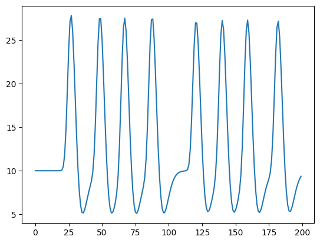
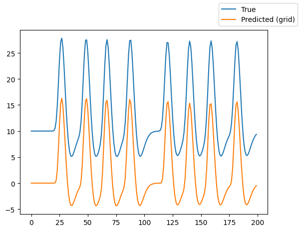
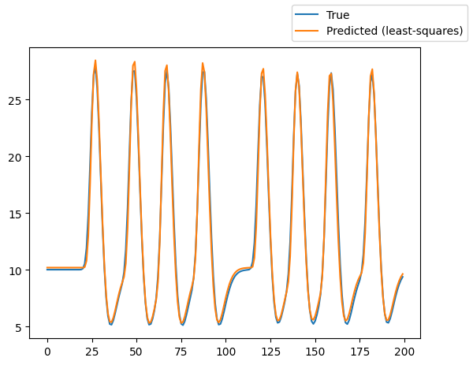
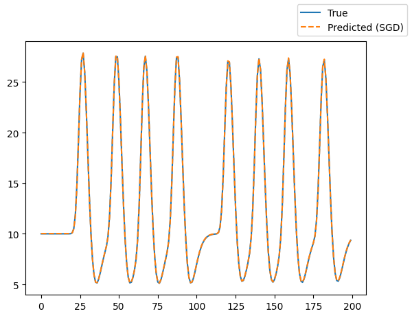

Getting started¶
This page gives a brief overview on how to fit a population receptive field (pRF) model to simulated data.
A pRF model maps neural activity in a region of interest in the brain (e.g., V1 in the human visual cortex) to an experimental stimulus (e.g., a bar moving through the visual field). Here, we use the visual domain as an example, where the part of the visual field that stimulates activity in the region of interest is the pRF.
Defining the stimulus¶
Let’s start with the first step: Defining the stimulus. We load an example stimulus that is included in the package. The stimulus simulates a bar moving in different directions through a two-dimensional visual field.
from prfmodel.examples import load_2d_prf_bar_stimulus
num_frames = 200 # Simulate 200 time frames
stimulus = load_2d_prf_bar_stimulus()
print(stimulus)
PRFStimulus(design=array[200, 101, 101], grid=array[101, 101, 2], dimension_labels=['y', 'x'])
2026-02-23 16:28:30.763282: I external/local_xla/xla/tsl/cuda/cudart_stub.cc:31] Could not find cuda drivers on your machine, GPU will not be used.
2026-02-23 16:28:30.806653: I tensorflow/core/platform/cpu_feature_guard.cc:210] This TensorFlow binary is optimized to use available CPU instructions in performance-critical operations.
To enable the following instructions: AVX2 FMA, in other operations, rebuild TensorFlow with the appropriate compiler flags.
/opt/hostedtoolcache/Python/3.12.12/x64/lib/python3.12/site-packages/requests/__init__.py:113: RequestsDependencyWarning: urllib3 (2.6.3) or chardet (6.0.0.post1)/charset_normalizer (3.4.4) doesn't match a supported version!
warnings.warn(
2026-02-23 16:28:32.100290: I external/local_xla/xla/tsl/cuda/cudart_stub.cc:31] Could not find cuda drivers on your machine, GPU will not be used.
When printing the stimulus object, we can see that it has three attributes. The design attribute defines how
the visual field changes over time. It has shape (num_frames, width, height), where width and hight define the number of pixels at which the visual field is recorded.
The grid attribute maps each pixel to its xy-coordinate in the visual field (i.e., the degree of visual angle).
Defining the pRF model¶
Now that we defined our stimulus, we can create a pRF model to predict a neural response to this stimulus in our (hypothetical) region of interest (e.g., V1). We use the most popular pRF model that is based on the seminal paper by Dumoulin and Wandell (2008).
The Gaussian2DPRFModel class performs all these steps to make a combined prediction.
from prfmodel.models.gaussian import Gaussian2DPRFModel
prf_model = Gaussian2DPRFModel()
To simulate a neural response to our stimulus with our Gaussian 2D pRF model, we need to define a set of parameters.
The list of parameters that need to be set to make model predictions can be obtained from the parameter_names property.
prf_model.parameter_names
['mu_y',
'mu_x',
'sigma',
'delay',
'dispersion',
'undershoot',
'u_dispersion',
'ratio',
'weight_deriv',
'baseline',
'amplitude']
The parameters mu_x, mu_y, and sigma define the location and size of the predicted Gaussian pRF and are of primary interest.
We simulate a pRF with its center at (-2.1, 1.45) and a size of 1.35. The parameters
delay, dispersion, undershoot, u_dispersion, ratio, and weight_deriv determine the impulse response that is
convolved with our pRF response. The parameters baseline and amplitude shift and scale our convolved
response, respectively. We store the parameter values in a pandas.DataFrame object.
import pandas as pd
true_params = pd.DataFrame(
{
"mu_x": [-2.1],
"mu_y": [1.45],
"sigma": [1.35],
"delay": [6.0],
"dispersion": [0.9],
"undershoot": [12.0],
"u_dispersion": [0.9],
"ratio": [0.48],
"weight_deriv": [-0.5],
"baseline": [10.0],
"amplitude": [1.2],
},
)
Using the “true” parameters, we simulate a response to our stimulus by making a prediction with our pRF model.
import matplotlib.pyplot as plt
simulated_response = prf_model(stimulus, true_params)
_ = plt.plot(simulated_response[0])
2026-02-23 16:28:33.315874: E external/local_xla/xla/stream_executor/cuda/cuda_platform.cc:51] failed call to cuInit: INTERNAL: CUDA error: Failed call to cuInit: UNKNOWN ERROR (303)

The predicted response contains increased activation followed by decreased activation compared to the baseline activity for each moving bar in our stimulus.
Fitting the pRF model¶
We will fit the pRF model to our simulated data using multiple stages. We begin with a grid search to find good
starting values for our parameters of interest (mu_x, mu_y, and sigma). Then, we use least squares to estimate the baseline and amplitude of
our model. Finally, we use stochastic gradient descent (SGD) to finetune our model fits.
Let’s start with the grid search by defining ranges of mu_x, mu_y, and sigma that we want to construct a grid
of parameter values from. For all other parameters, we only provide a single value so that they will stay constant
across the entire grid.
import numpy as np
param_ranges = {
"mu_x": np.linspace(-3.0, 3.0, 10),
"mu_y": np.linspace(-3.0, 3.0, 10),
"sigma": np.linspace(0.5, 3.0, 10),
"delay": [6.0],
"dispersion": [0.9],
"undershoot": [12.0],
"u_dispersion": [0.9],
"ratio": [0.48],
"weight_deriv": [-0.5],
"baseline": [0.0],
"amplitude": [1.0],
}
For all three parameters, we defined ranges of 10 values that will be used to construct the grid. That is, the grid search will evaluate all possible combinations of these values and return the combination that fits the simulated data best. This will result in a grid containing \(10 \times 10 \times 10 = 1000\) parameter combinations.
Let’s construct the GridFitter and perform the grid search. Note that we set chunk_size=20 to let the GridFitter
evaluate 20 parameter combinations at the same time (which saves us some memory).
from prfmodel.fitters.grid import GridFitter
grid_fitter = GridFitter(
model=prf_model,
stimulus=stimulus,
)
grid_history, grid_params = grid_fitter.fit(
data=simulated_response,
parameter_values=param_ranges,
batch_size=20,
)
Processing parameter grid: 0%| | 0/50 [00:00<?, ?it/s]
Processing parameter grid: 0%| | 0/50 [00:00<?, ?it/s, loss=131]
Processing parameter grid: 0%| | 0/50 [00:00<?, ?it/s, loss=121]
Processing parameter grid: 0%| | 0/50 [00:00<?, ?it/s, loss=114]
Processing parameter grid: 6%|▌ | 3/50 [00:00<00:01, 24.89it/s, loss=114]
Processing parameter grid: 6%|▌ | 3/50 [00:00<00:01, 24.89it/s, loss=112]
Processing parameter grid: 6%|▌ | 3/50 [00:00<00:01, 24.89it/s, loss=112]
Processing parameter grid: 6%|▌ | 3/50 [00:00<00:01, 24.89it/s, loss=112]
Processing parameter grid: 6%|▌ | 3/50 [00:00<00:01, 24.89it/s, loss=112]
Processing parameter grid: 14%|█▍ | 7/50 [00:00<00:01, 28.14it/s, loss=112]
Processing parameter grid: 14%|█▍ | 7/50 [00:00<00:01, 28.14it/s, loss=112]
Processing parameter grid: 14%|█▍ | 7/50 [00:00<00:01, 28.14it/s, loss=110]
Processing parameter grid: 14%|█▍ | 7/50 [00:00<00:01, 28.14it/s, loss=110]
Processing parameter grid: 14%|█▍ | 7/50 [00:00<00:01, 28.14it/s, loss=110]
Processing parameter grid: 22%|██▏ | 11/50 [00:00<00:01, 29.12it/s, loss=110]
Processing parameter grid: 22%|██▏ | 11/50 [00:00<00:01, 29.12it/s, loss=110]
Processing parameter grid: 22%|██▏ | 11/50 [00:00<00:01, 29.12it/s, loss=110]
Processing parameter grid: 22%|██▏ | 11/50 [00:00<00:01, 29.12it/s, loss=110]
Processing parameter grid: 28%|██▊ | 14/50 [00:00<00:01, 28.72it/s, loss=110]
Processing parameter grid: 28%|██▊ | 14/50 [00:00<00:01, 28.72it/s, loss=110]
Processing parameter grid: 28%|██▊ | 14/50 [00:00<00:01, 28.72it/s, loss=110]
Processing parameter grid: 28%|██▊ | 14/50 [00:00<00:01, 28.72it/s, loss=110]
Processing parameter grid: 28%|██▊ | 14/50 [00:00<00:01, 28.72it/s, loss=110]
Processing parameter grid: 36%|███▌ | 18/50 [00:00<00:01, 29.37it/s, loss=110]
Processing parameter grid: 36%|███▌ | 18/50 [00:00<00:01, 29.37it/s, loss=110]
Processing parameter grid: 36%|███▌ | 18/50 [00:00<00:01, 29.37it/s, loss=110]
Processing parameter grid: 36%|███▌ | 18/50 [00:00<00:01, 29.37it/s, loss=110]
Processing parameter grid: 36%|███▌ | 18/50 [00:00<00:01, 29.37it/s, loss=110]
Processing parameter grid: 44%|████▍ | 22/50 [00:00<00:00, 29.69it/s, loss=110]
Processing parameter grid: 44%|████▍ | 22/50 [00:00<00:00, 29.69it/s, loss=110]
Processing parameter grid: 44%|████▍ | 22/50 [00:00<00:00, 29.69it/s, loss=110]
Processing parameter grid: 44%|████▍ | 22/50 [00:00<00:00, 29.69it/s, loss=110]
Processing parameter grid: 44%|████▍ | 22/50 [00:00<00:00, 29.69it/s, loss=110]
Processing parameter grid: 52%|█████▏ | 26/50 [00:00<00:00, 29.90it/s, loss=110]
Processing parameter grid: 52%|█████▏ | 26/50 [00:00<00:00, 29.90it/s, loss=110]
Processing parameter grid: 52%|█████▏ | 26/50 [00:00<00:00, 29.90it/s, loss=110]
Processing parameter grid: 52%|█████▏ | 26/50 [00:00<00:00, 29.90it/s, loss=110]
Processing parameter grid: 58%|█████▊ | 29/50 [00:00<00:00, 29.55it/s, loss=110]
Processing parameter grid: 58%|█████▊ | 29/50 [00:01<00:00, 29.55it/s, loss=110]
Processing parameter grid: 58%|█████▊ | 29/50 [00:01<00:00, 29.55it/s, loss=110]
Processing parameter grid: 58%|█████▊ | 29/50 [00:01<00:00, 29.55it/s, loss=110]
Processing parameter grid: 64%|██████▍ | 32/50 [00:01<00:00, 29.35it/s, loss=110]
Processing parameter grid: 64%|██████▍ | 32/50 [00:01<00:00, 29.35it/s, loss=110]
Processing parameter grid: 64%|██████▍ | 32/50 [00:01<00:00, 29.35it/s, loss=110]
Processing parameter grid: 64%|██████▍ | 32/50 [00:01<00:00, 29.35it/s, loss=110]
Processing parameter grid: 70%|███████ | 35/50 [00:01<00:00, 29.20it/s, loss=110]
Processing parameter grid: 70%|███████ | 35/50 [00:01<00:00, 29.20it/s, loss=110]
Processing parameter grid: 70%|███████ | 35/50 [00:01<00:00, 29.20it/s, loss=110]
Processing parameter grid: 70%|███████ | 35/50 [00:01<00:00, 29.20it/s, loss=110]
Processing parameter grid: 76%|███████▌ | 38/50 [00:01<00:00, 29.28it/s, loss=110]
Processing parameter grid: 76%|███████▌ | 38/50 [00:01<00:00, 29.28it/s, loss=110]
Processing parameter grid: 76%|███████▌ | 38/50 [00:01<00:00, 29.28it/s, loss=110]
Processing parameter grid: 76%|███████▌ | 38/50 [00:01<00:00, 29.28it/s, loss=110]
Processing parameter grid: 82%|████████▏ | 41/50 [00:01<00:00, 28.96it/s, loss=110]
Processing parameter grid: 82%|████████▏ | 41/50 [00:01<00:00, 28.96it/s, loss=110]
Processing parameter grid: 82%|████████▏ | 41/50 [00:01<00:00, 28.96it/s, loss=110]
Processing parameter grid: 82%|████████▏ | 41/50 [00:01<00:00, 28.96it/s, loss=110]
Processing parameter grid: 88%|████████▊ | 44/50 [00:01<00:00, 29.03it/s, loss=110]
Processing parameter grid: 88%|████████▊ | 44/50 [00:01<00:00, 29.03it/s, loss=110]
Processing parameter grid: 88%|████████▊ | 44/50 [00:01<00:00, 29.03it/s, loss=110]
Processing parameter grid: 88%|████████▊ | 44/50 [00:01<00:00, 29.03it/s, loss=110]
Processing parameter grid: 88%|████████▊ | 44/50 [00:01<00:00, 29.03it/s, loss=110]
Processing parameter grid: 96%|█████████▌| 48/50 [00:01<00:00, 29.44it/s, loss=110]
Processing parameter grid: 96%|█████████▌| 48/50 [00:01<00:00, 29.44it/s, loss=110]
Processing parameter grid: 96%|█████████▌| 48/50 [00:01<00:00, 29.44it/s, loss=110]
Processing parameter grid: 100%|██████████| 50/50 [00:01<00:00, 29.21it/s, loss=110]
grid_params
| mu_x | mu_y | sigma | delay | dispersion | undershoot | u_dispersion | ratio | weight_deriv | baseline | amplitude | |
|---|---|---|---|---|---|---|---|---|---|---|---|
| 0 | -2.333333 | 1.666667 | 0.5 | 6.0 | 0.9 | 12.0 | 0.9 | 0.48 | -0.5 | 0.0 | 1.0 |
We can see that the estimates for mu_x, mu_y, and sigma are one combination in our grid. However, because the
grid did not contain the “true” parameters we used to simulate the original response, the estimates differ from the
“true” parameters.
Using the parameter estimates resulting from the grid search we can make model predictions and compare them against the original simulated response.
grid_pred_response = prf_model(stimulus, grid_params)
fig, ax = plt.subplots()
ax.plot(simulated_response[0], label="True")
ax.plot(grid_pred_response[0], label="Predicted (grid)")
fig.legend();

We can see that the predicted response follows the shape of the original (true) response but still shows some deviation in the amplitude of the activation peaks and the baseline activation.
Using least squares, we can estimate the baseline and amplitude parameters of our model.
from prfmodel.fitters.linear import LeastSquaresFitter
ls_fitter = LeastSquaresFitter(
model=prf_model,
stimulus=stimulus,
)
ls_history, ls_params = ls_fitter.fit(
data=simulated_response,
parameters=grid_params,
slope_name="amplitude", # Names of parameters to be optimized with least squares
intercept_name="baseline",
)
ls_params
Processing data batches: 0%| | 0/1 [00:00<?, ?it/s]
Processing data batches: 100%|██████████| 1/1 [00:00<00:00, 17.38it/s]
| mu_x | mu_y | sigma | delay | dispersion | undershoot | u_dispersion | ratio | weight_deriv | baseline | amplitude | |
|---|---|---|---|---|---|---|---|---|---|---|---|
| 0 | -2.333333 | 1.666667 | 0.5 | 6.0 | 0.9 | 12.0 | 0.9 | 0.48 | -0.5 | 10.179467 | 1.120465 |
Looking at the parameters, we can see that the model compensates the deviation in the peaks by adjusting the
baseline and amplitude parameters. We can also plot the predicted response.
ls_pred_response = prf_model(stimulus, ls_params)
fig, ax = plt.subplots()
ax.plot(simulated_response[0], label="True")
ax.plot(ls_pred_response[0], label="Predicted (least-squares)")
fig.legend();

To finetune our model fits, we use SGD to iteratively optimize model parameters using the gradient of a loss function that is computed between data and model predictions. The default loss function in prfmodel is the means squared error. As initial parameters, we use the result from the grid search and least squares fit. We fix the parameters related to the impulse response to their initial values (which are the “true” values).
from prfmodel.fitters.sgd import SGDFitter
sgd_fitter = SGDFitter(
model=prf_model,
stimulus=stimulus,
)
sgd_history, sgd_params = sgd_fitter.fit(
data=simulated_response,
init_parameters=ls_params,
fixed_parameters=["delay", "dispersion", "undershoot", "u_dispersion", "ratio", "weight_deriv"],
)
0%| | 0/1000 [00:00<?, ?it/s]
0%| | 0/1000 [00:00<?, ?it/s, loss=0.395]
0%| | 0/1000 [00:00<?, ?it/s, loss=0.393]
0%| | 2/1000 [00:00<01:03, 15.77it/s, loss=0.393]
0%| | 2/1000 [00:00<01:03, 15.77it/s, loss=0.392]
0%| | 2/1000 [00:00<01:03, 15.77it/s, loss=0.391]
0%| | 4/1000 [00:00<00:59, 16.84it/s, loss=0.391]
0%| | 4/1000 [00:00<00:59, 16.84it/s, loss=0.39]
0%| | 4/1000 [00:00<00:59, 16.84it/s, loss=0.389]
1%| | 6/1000 [00:00<00:57, 17.16it/s, loss=0.389]
1%| | 6/1000 [00:00<00:57, 17.16it/s, loss=0.388]
1%| | 6/1000 [00:00<00:57, 17.16it/s, loss=0.387]
1%| | 8/1000 [00:00<00:57, 17.25it/s, loss=0.387]
1%| | 8/1000 [00:00<00:57, 17.25it/s, loss=0.386]
1%| | 8/1000 [00:00<00:57, 17.25it/s, loss=0.385]
1%| | 10/1000 [00:00<00:57, 17.37it/s, loss=0.385]
1%| | 10/1000 [00:00<00:57, 17.37it/s, loss=0.383]
1%| | 10/1000 [00:00<00:57, 17.37it/s, loss=0.382]
1%| | 12/1000 [00:00<00:56, 17.49it/s, loss=0.382]
1%| | 12/1000 [00:00<00:56, 17.49it/s, loss=0.381]
1%| | 12/1000 [00:00<00:56, 17.49it/s, loss=0.38]
1%|▏ | 14/1000 [00:00<00:56, 17.50it/s, loss=0.38]
1%|▏ | 14/1000 [00:00<00:56, 17.50it/s, loss=0.379]
1%|▏ | 14/1000 [00:00<00:56, 17.50it/s, loss=0.378]
2%|▏ | 16/1000 [00:00<00:55, 17.61it/s, loss=0.378]
2%|▏ | 16/1000 [00:00<00:55, 17.61it/s, loss=0.377]
2%|▏ | 16/1000 [00:01<00:55, 17.61it/s, loss=0.376]
2%|▏ | 18/1000 [00:01<00:55, 17.63it/s, loss=0.376]
2%|▏ | 18/1000 [00:01<00:55, 17.63it/s, loss=0.375]
2%|▏ | 18/1000 [00:01<00:55, 17.63it/s, loss=0.374]
2%|▏ | 20/1000 [00:01<00:55, 17.72it/s, loss=0.374]
2%|▏ | 20/1000 [00:01<00:55, 17.72it/s, loss=0.373]
2%|▏ | 20/1000 [00:01<00:55, 17.72it/s, loss=0.372]
2%|▏ | 22/1000 [00:01<00:55, 17.77it/s, loss=0.372]
2%|▏ | 22/1000 [00:01<00:55, 17.77it/s, loss=0.371]
2%|▏ | 22/1000 [00:01<00:55, 17.77it/s, loss=0.37]
2%|▏ | 24/1000 [00:01<00:54, 17.76it/s, loss=0.37]
2%|▏ | 24/1000 [00:01<00:54, 17.76it/s, loss=0.369]
2%|▏ | 24/1000 [00:01<00:54, 17.76it/s, loss=0.368]
3%|▎ | 26/1000 [00:01<00:54, 17.77it/s, loss=0.368]
3%|▎ | 26/1000 [00:01<00:54, 17.77it/s, loss=0.367]
3%|▎ | 26/1000 [00:01<00:54, 17.77it/s, loss=0.366]
3%|▎ | 28/1000 [00:01<00:54, 17.83it/s, loss=0.366]
3%|▎ | 28/1000 [00:01<00:54, 17.83it/s, loss=0.365]
3%|▎ | 28/1000 [00:01<00:54, 17.83it/s, loss=0.364]
3%|▎ | 30/1000 [00:01<00:54, 17.81it/s, loss=0.364]
3%|▎ | 30/1000 [00:01<00:54, 17.81it/s, loss=0.363]
3%|▎ | 30/1000 [00:01<00:54, 17.81it/s, loss=0.362]
3%|▎ | 32/1000 [00:01<00:54, 17.82it/s, loss=0.362]
3%|▎ | 32/1000 [00:01<00:54, 17.82it/s, loss=0.361]
3%|▎ | 32/1000 [00:01<00:54, 17.82it/s, loss=0.36]
3%|▎ | 34/1000 [00:01<00:54, 17.70it/s, loss=0.36]
3%|▎ | 34/1000 [00:01<00:54, 17.70it/s, loss=0.359]
3%|▎ | 34/1000 [00:02<00:54, 17.70it/s, loss=0.358]
4%|▎ | 36/1000 [00:02<00:54, 17.74it/s, loss=0.358]
4%|▎ | 36/1000 [00:02<00:54, 17.74it/s, loss=0.357]
4%|▎ | 36/1000 [00:02<00:54, 17.74it/s, loss=0.356]
4%|▍ | 38/1000 [00:02<00:54, 17.79it/s, loss=0.356]
4%|▍ | 38/1000 [00:02<00:54, 17.79it/s, loss=0.355]
4%|▍ | 38/1000 [00:02<00:54, 17.79it/s, loss=0.354]
4%|▍ | 40/1000 [00:02<00:53, 17.86it/s, loss=0.354]
4%|▍ | 40/1000 [00:02<00:53, 17.86it/s, loss=0.353]
4%|▍ | 40/1000 [00:02<00:53, 17.86it/s, loss=0.352]
4%|▍ | 42/1000 [00:02<00:53, 17.80it/s, loss=0.352]
4%|▍ | 42/1000 [00:02<00:53, 17.80it/s, loss=0.351]
4%|▍ | 42/1000 [00:02<00:53, 17.80it/s, loss=0.35]
4%|▍ | 44/1000 [00:02<00:53, 17.72it/s, loss=0.35]
4%|▍ | 44/1000 [00:02<00:53, 17.72it/s, loss=0.349]
4%|▍ | 44/1000 [00:02<00:53, 17.72it/s, loss=0.348]
5%|▍ | 46/1000 [00:02<00:53, 17.79it/s, loss=0.348]
5%|▍ | 46/1000 [00:02<00:53, 17.79it/s, loss=0.347]
5%|▍ | 46/1000 [00:02<00:53, 17.79it/s, loss=0.346]
5%|▍ | 48/1000 [00:02<00:53, 17.82it/s, loss=0.346]
5%|▍ | 48/1000 [00:02<00:53, 17.82it/s, loss=0.345]
5%|▍ | 48/1000 [00:02<00:53, 17.82it/s, loss=0.344]
5%|▌ | 50/1000 [00:02<00:53, 17.78it/s, loss=0.344]
5%|▌ | 50/1000 [00:02<00:53, 17.78it/s, loss=0.343]
5%|▌ | 50/1000 [00:02<00:53, 17.78it/s, loss=0.342]
5%|▌ | 52/1000 [00:02<00:53, 17.80it/s, loss=0.342]
5%|▌ | 52/1000 [00:03<00:53, 17.80it/s, loss=0.341]
5%|▌ | 52/1000 [00:03<00:53, 17.80it/s, loss=0.34]
5%|▌ | 54/1000 [00:03<00:53, 17.71it/s, loss=0.34]
5%|▌ | 54/1000 [00:03<00:53, 17.71it/s, loss=0.34]
5%|▌ | 54/1000 [00:03<00:53, 17.71it/s, loss=0.339]
6%|▌ | 56/1000 [00:03<00:53, 17.75it/s, loss=0.339]
6%|▌ | 56/1000 [00:03<00:53, 17.75it/s, loss=0.338]
6%|▌ | 56/1000 [00:03<00:53, 17.75it/s, loss=0.337]
6%|▌ | 58/1000 [00:03<00:52, 17.80it/s, loss=0.337]
6%|▌ | 58/1000 [00:03<00:52, 17.80it/s, loss=0.336]
6%|▌ | 58/1000 [00:03<00:52, 17.80it/s, loss=0.335]
6%|▌ | 60/1000 [00:03<00:55, 16.89it/s, loss=0.335]
6%|▌ | 60/1000 [00:03<00:55, 16.89it/s, loss=0.334]
6%|▌ | 60/1000 [00:03<00:55, 16.89it/s, loss=0.333]
6%|▌ | 62/1000 [00:03<00:55, 16.97it/s, loss=0.333]
6%|▌ | 62/1000 [00:03<00:55, 16.97it/s, loss=0.332]
6%|▌ | 62/1000 [00:03<00:55, 16.97it/s, loss=0.331]
6%|▋ | 64/1000 [00:03<00:54, 17.08it/s, loss=0.331]
6%|▋ | 64/1000 [00:03<00:54, 17.08it/s, loss=0.331]
6%|▋ | 64/1000 [00:03<00:54, 17.08it/s, loss=0.33]
7%|▋ | 66/1000 [00:03<00:54, 17.16it/s, loss=0.33]
7%|▋ | 66/1000 [00:03<00:54, 17.16it/s, loss=0.329]
7%|▋ | 66/1000 [00:03<00:54, 17.16it/s, loss=0.328]
7%|▋ | 68/1000 [00:03<00:54, 17.21it/s, loss=0.328]
7%|▋ | 68/1000 [00:03<00:54, 17.21it/s, loss=0.327]
7%|▋ | 68/1000 [00:03<00:54, 17.21it/s, loss=0.326]
7%|▋ | 70/1000 [00:03<00:54, 17.16it/s, loss=0.326]
7%|▋ | 70/1000 [00:04<00:54, 17.16it/s, loss=0.325]
7%|▋ | 70/1000 [00:04<00:54, 17.16it/s, loss=0.325]
7%|▋ | 72/1000 [00:04<00:53, 17.26it/s, loss=0.325]
7%|▋ | 72/1000 [00:04<00:53, 17.26it/s, loss=0.324]
7%|▋ | 72/1000 [00:04<00:53, 17.26it/s, loss=0.323]
7%|▋ | 74/1000 [00:04<00:53, 17.32it/s, loss=0.323]
7%|▋ | 74/1000 [00:04<00:53, 17.32it/s, loss=0.322]
7%|▋ | 74/1000 [00:04<00:53, 17.32it/s, loss=0.321]
8%|▊ | 76/1000 [00:04<00:53, 17.33it/s, loss=0.321]
8%|▊ | 76/1000 [00:04<00:53, 17.33it/s, loss=0.32]
8%|▊ | 76/1000 [00:04<00:53, 17.33it/s, loss=0.319]
8%|▊ | 78/1000 [00:04<00:52, 17.42it/s, loss=0.319]
8%|▊ | 78/1000 [00:04<00:52, 17.42it/s, loss=0.319]
8%|▊ | 78/1000 [00:04<00:52, 17.42it/s, loss=0.318]
8%|▊ | 80/1000 [00:04<00:52, 17.38it/s, loss=0.318]
8%|▊ | 80/1000 [00:04<00:52, 17.38it/s, loss=0.317]
8%|▊ | 80/1000 [00:04<00:52, 17.38it/s, loss=0.316]
8%|▊ | 82/1000 [00:04<00:52, 17.42it/s, loss=0.316]
8%|▊ | 82/1000 [00:04<00:52, 17.42it/s, loss=0.315]
8%|▊ | 82/1000 [00:04<00:52, 17.42it/s, loss=0.315]
8%|▊ | 84/1000 [00:04<00:52, 17.37it/s, loss=0.315]
8%|▊ | 84/1000 [00:04<00:52, 17.37it/s, loss=0.314]
8%|▊ | 84/1000 [00:04<00:52, 17.37it/s, loss=0.313]
9%|▊ | 86/1000 [00:04<00:52, 17.40it/s, loss=0.313]
9%|▊ | 86/1000 [00:04<00:52, 17.40it/s, loss=0.312]
9%|▊ | 86/1000 [00:05<00:52, 17.40it/s, loss=0.311]
9%|▉ | 88/1000 [00:05<00:52, 17.30it/s, loss=0.311]
9%|▉ | 88/1000 [00:05<00:52, 17.30it/s, loss=0.311]
9%|▉ | 88/1000 [00:05<00:52, 17.30it/s, loss=0.31]
9%|▉ | 90/1000 [00:05<00:52, 17.30it/s, loss=0.31]
9%|▉ | 90/1000 [00:05<00:52, 17.30it/s, loss=0.309]
9%|▉ | 90/1000 [00:05<00:52, 17.30it/s, loss=0.308]
9%|▉ | 92/1000 [00:05<00:52, 17.32it/s, loss=0.308]
9%|▉ | 92/1000 [00:05<00:52, 17.32it/s, loss=0.307]
9%|▉ | 92/1000 [00:05<00:52, 17.32it/s, loss=0.307]
9%|▉ | 94/1000 [00:05<00:51, 17.44it/s, loss=0.307]
9%|▉ | 94/1000 [00:05<00:51, 17.44it/s, loss=0.306]
9%|▉ | 94/1000 [00:05<00:51, 17.44it/s, loss=0.305]
10%|▉ | 96/1000 [00:05<00:52, 17.16it/s, loss=0.305]
10%|▉ | 96/1000 [00:05<00:52, 17.16it/s, loss=0.304]
10%|▉ | 96/1000 [00:05<00:52, 17.16it/s, loss=0.304]
10%|▉ | 98/1000 [00:05<00:52, 17.32it/s, loss=0.304]
10%|▉ | 98/1000 [00:05<00:52, 17.32it/s, loss=0.303]
10%|▉ | 98/1000 [00:05<00:52, 17.32it/s, loss=0.302]
10%|█ | 100/1000 [00:05<00:51, 17.33it/s, loss=0.302]
10%|█ | 100/1000 [00:05<00:51, 17.33it/s, loss=0.301]
10%|█ | 100/1000 [00:05<00:51, 17.33it/s, loss=0.301]
10%|█ | 102/1000 [00:05<00:51, 17.44it/s, loss=0.301]
10%|█ | 102/1000 [00:05<00:51, 17.44it/s, loss=0.3]
10%|█ | 102/1000 [00:05<00:51, 17.44it/s, loss=0.299]
10%|█ | 104/1000 [00:05<00:51, 17.55it/s, loss=0.299]
10%|█ | 104/1000 [00:06<00:51, 17.55it/s, loss=0.298]
10%|█ | 104/1000 [00:06<00:51, 17.55it/s, loss=0.298]
11%|█ | 106/1000 [00:06<00:50, 17.56it/s, loss=0.298]
11%|█ | 106/1000 [00:06<00:50, 17.56it/s, loss=0.297]
11%|█ | 106/1000 [00:06<00:50, 17.56it/s, loss=0.296]
11%|█ | 108/1000 [00:06<00:50, 17.62it/s, loss=0.296]
11%|█ | 108/1000 [00:06<00:50, 17.62it/s, loss=0.295]
11%|█ | 108/1000 [00:06<00:50, 17.62it/s, loss=0.295]
11%|█ | 110/1000 [00:06<00:50, 17.71it/s, loss=0.295]
11%|█ | 110/1000 [00:06<00:50, 17.71it/s, loss=0.294]
11%|█ | 110/1000 [00:06<00:50, 17.71it/s, loss=0.293]
11%|█ | 112/1000 [00:06<00:50, 17.68it/s, loss=0.293]
11%|█ | 112/1000 [00:06<00:50, 17.68it/s, loss=0.292]
11%|█ | 112/1000 [00:06<00:50, 17.68it/s, loss=0.292]
11%|█▏ | 114/1000 [00:06<00:50, 17.71it/s, loss=0.292]
11%|█▏ | 114/1000 [00:06<00:50, 17.71it/s, loss=0.291]
11%|█▏ | 114/1000 [00:06<00:50, 17.71it/s, loss=0.29]
12%|█▏ | 116/1000 [00:06<00:49, 17.74it/s, loss=0.29]
12%|█▏ | 116/1000 [00:06<00:49, 17.74it/s, loss=0.29]
12%|█▏ | 116/1000 [00:06<00:49, 17.74it/s, loss=0.289]
12%|█▏ | 118/1000 [00:06<00:49, 17.71it/s, loss=0.289]
12%|█▏ | 118/1000 [00:06<00:49, 17.71it/s, loss=0.288]
12%|█▏ | 118/1000 [00:06<00:49, 17.71it/s, loss=0.288]
12%|█▏ | 120/1000 [00:06<00:49, 17.77it/s, loss=0.288]
12%|█▏ | 120/1000 [00:06<00:49, 17.77it/s, loss=0.287]
12%|█▏ | 120/1000 [00:06<00:49, 17.77it/s, loss=0.286]
12%|█▏ | 122/1000 [00:06<00:49, 17.78it/s, loss=0.286]
12%|█▏ | 122/1000 [00:07<00:49, 17.78it/s, loss=0.285]
12%|█▏ | 122/1000 [00:07<00:49, 17.78it/s, loss=0.285]
12%|█▏ | 124/1000 [00:07<00:49, 17.78it/s, loss=0.285]
12%|█▏ | 124/1000 [00:07<00:49, 17.78it/s, loss=0.284]
12%|█▏ | 124/1000 [00:07<00:49, 17.78it/s, loss=0.283]
13%|█▎ | 126/1000 [00:07<00:49, 17.75it/s, loss=0.283]
13%|█▎ | 126/1000 [00:07<00:49, 17.75it/s, loss=0.283]
13%|█▎ | 126/1000 [00:07<00:49, 17.75it/s, loss=0.282]
13%|█▎ | 128/1000 [00:07<00:49, 17.74it/s, loss=0.282]
13%|█▎ | 128/1000 [00:07<00:49, 17.74it/s, loss=0.281]
13%|█▎ | 128/1000 [00:07<00:49, 17.74it/s, loss=0.281]
13%|█▎ | 130/1000 [00:07<00:49, 17.68it/s, loss=0.281]
13%|█▎ | 130/1000 [00:07<00:49, 17.68it/s, loss=0.28]
13%|█▎ | 130/1000 [00:07<00:49, 17.68it/s, loss=0.279]
13%|█▎ | 132/1000 [00:07<00:49, 17.69it/s, loss=0.279]
13%|█▎ | 132/1000 [00:07<00:49, 17.69it/s, loss=0.279]
13%|█▎ | 132/1000 [00:07<00:49, 17.69it/s, loss=0.278]
13%|█▎ | 134/1000 [00:07<00:48, 17.69it/s, loss=0.278]
13%|█▎ | 134/1000 [00:07<00:48, 17.69it/s, loss=0.277]
13%|█▎ | 134/1000 [00:07<00:48, 17.69it/s, loss=0.277]
14%|█▎ | 136/1000 [00:07<00:48, 17.91it/s, loss=0.277]
14%|█▎ | 136/1000 [00:07<00:48, 17.91it/s, loss=0.276]
14%|█▎ | 136/1000 [00:07<00:48, 17.91it/s, loss=0.275]
14%|█▍ | 138/1000 [00:07<00:48, 17.86it/s, loss=0.275]
14%|█▍ | 138/1000 [00:07<00:48, 17.86it/s, loss=0.275]
14%|█▍ | 138/1000 [00:07<00:48, 17.86it/s, loss=0.274]
14%|█▍ | 140/1000 [00:07<00:48, 17.80it/s, loss=0.274]
14%|█▍ | 140/1000 [00:08<00:48, 17.80it/s, loss=0.274]
14%|█▍ | 140/1000 [00:08<00:48, 17.80it/s, loss=0.273]
14%|█▍ | 142/1000 [00:08<00:48, 17.66it/s, loss=0.273]
14%|█▍ | 142/1000 [00:08<00:48, 17.66it/s, loss=0.272]
14%|█▍ | 142/1000 [00:08<00:48, 17.66it/s, loss=0.272]
14%|█▍ | 144/1000 [00:08<00:48, 17.66it/s, loss=0.272]
14%|█▍ | 144/1000 [00:08<00:48, 17.66it/s, loss=0.271]
14%|█▍ | 144/1000 [00:08<00:48, 17.66it/s, loss=0.27]
15%|█▍ | 146/1000 [00:08<00:48, 17.71it/s, loss=0.27]
15%|█▍ | 146/1000 [00:08<00:48, 17.71it/s, loss=0.27]
15%|█▍ | 146/1000 [00:08<00:48, 17.71it/s, loss=0.269]
15%|█▍ | 148/1000 [00:08<00:48, 17.72it/s, loss=0.269]
15%|█▍ | 148/1000 [00:08<00:48, 17.72it/s, loss=0.268]
15%|█▍ | 148/1000 [00:08<00:48, 17.72it/s, loss=0.268]
15%|█▌ | 150/1000 [00:08<00:47, 17.74it/s, loss=0.268]
15%|█▌ | 150/1000 [00:08<00:47, 17.74it/s, loss=0.267]
15%|█▌ | 150/1000 [00:08<00:47, 17.74it/s, loss=0.267]
15%|█▌ | 152/1000 [00:08<00:47, 17.74it/s, loss=0.267]
15%|█▌ | 152/1000 [00:08<00:47, 17.74it/s, loss=0.266]
15%|█▌ | 152/1000 [00:08<00:47, 17.74it/s, loss=0.265]
15%|█▌ | 154/1000 [00:08<00:47, 17.76it/s, loss=0.265]
15%|█▌ | 154/1000 [00:08<00:47, 17.76it/s, loss=0.265]
15%|█▌ | 154/1000 [00:08<00:47, 17.76it/s, loss=0.264]
16%|█▌ | 156/1000 [00:08<00:47, 17.77it/s, loss=0.264]
16%|█▌ | 156/1000 [00:08<00:47, 17.77it/s, loss=0.264]
16%|█▌ | 156/1000 [00:08<00:47, 17.77it/s, loss=0.263]
16%|█▌ | 158/1000 [00:08<00:47, 17.73it/s, loss=0.263]
16%|█▌ | 158/1000 [00:09<00:47, 17.73it/s, loss=0.262]
16%|█▌ | 158/1000 [00:09<00:47, 17.73it/s, loss=0.262]
16%|█▌ | 160/1000 [00:09<00:47, 17.81it/s, loss=0.262]
16%|█▌ | 160/1000 [00:09<00:47, 17.81it/s, loss=0.261]
16%|█▌ | 160/1000 [00:09<00:47, 17.81it/s, loss=0.261]
16%|█▌ | 162/1000 [00:09<00:47, 17.80it/s, loss=0.261]
16%|█▌ | 162/1000 [00:09<00:47, 17.80it/s, loss=0.26]
16%|█▌ | 162/1000 [00:09<00:47, 17.80it/s, loss=0.26]
16%|█▋ | 164/1000 [00:09<00:46, 17.82it/s, loss=0.26]
16%|█▋ | 164/1000 [00:09<00:46, 17.82it/s, loss=0.259]
16%|█▋ | 164/1000 [00:09<00:46, 17.82it/s, loss=0.258]
17%|█▋ | 166/1000 [00:09<00:46, 17.84it/s, loss=0.258]
17%|█▋ | 166/1000 [00:09<00:46, 17.84it/s, loss=0.258]
17%|█▋ | 166/1000 [00:09<00:46, 17.84it/s, loss=0.257]
17%|█▋ | 168/1000 [00:09<00:46, 17.82it/s, loss=0.257]
17%|█▋ | 168/1000 [00:09<00:46, 17.82it/s, loss=0.257]
17%|█▋ | 168/1000 [00:09<00:46, 17.82it/s, loss=0.256]
17%|█▋ | 170/1000 [00:09<00:46, 17.68it/s, loss=0.256]
17%|█▋ | 170/1000 [00:09<00:46, 17.68it/s, loss=0.256]
17%|█▋ | 170/1000 [00:09<00:46, 17.68it/s, loss=0.255]
17%|█▋ | 172/1000 [00:09<00:46, 17.74it/s, loss=0.255]
17%|█▋ | 172/1000 [00:09<00:46, 17.74it/s, loss=0.254]
17%|█▋ | 172/1000 [00:09<00:46, 17.74it/s, loss=0.254]
17%|█▋ | 174/1000 [00:09<00:46, 17.78it/s, loss=0.254]
17%|█▋ | 174/1000 [00:09<00:46, 17.78it/s, loss=0.253]
17%|█▋ | 174/1000 [00:10<00:46, 17.78it/s, loss=0.253]
18%|█▊ | 176/1000 [00:10<00:46, 17.76it/s, loss=0.253]
18%|█▊ | 176/1000 [00:10<00:46, 17.76it/s, loss=0.252]
18%|█▊ | 176/1000 [00:10<00:46, 17.76it/s, loss=0.252]
18%|█▊ | 178/1000 [00:10<00:46, 17.68it/s, loss=0.252]
18%|█▊ | 178/1000 [00:10<00:46, 17.68it/s, loss=0.251]
18%|█▊ | 178/1000 [00:10<00:46, 17.68it/s, loss=0.251]
18%|█▊ | 180/1000 [00:10<00:46, 17.72it/s, loss=0.251]
18%|█▊ | 180/1000 [00:10<00:46, 17.72it/s, loss=0.25]
18%|█▊ | 180/1000 [00:10<00:46, 17.72it/s, loss=0.249]
18%|█▊ | 182/1000 [00:10<00:46, 17.76it/s, loss=0.249]
18%|█▊ | 182/1000 [00:10<00:46, 17.76it/s, loss=0.249]
18%|█▊ | 182/1000 [00:10<00:46, 17.76it/s, loss=0.248]
18%|█▊ | 184/1000 [00:10<00:45, 17.79it/s, loss=0.248]
18%|█▊ | 184/1000 [00:10<00:45, 17.79it/s, loss=0.248]
18%|█▊ | 184/1000 [00:10<00:45, 17.79it/s, loss=0.247]
19%|█▊ | 186/1000 [00:10<00:45, 17.76it/s, loss=0.247]
19%|█▊ | 186/1000 [00:10<00:45, 17.76it/s, loss=0.247]
19%|█▊ | 186/1000 [00:10<00:45, 17.76it/s, loss=0.246]
19%|█▉ | 188/1000 [00:10<00:45, 17.76it/s, loss=0.246]
19%|█▉ | 188/1000 [00:10<00:45, 17.76it/s, loss=0.246]
19%|█▉ | 188/1000 [00:10<00:45, 17.76it/s, loss=0.245]
19%|█▉ | 190/1000 [00:10<00:45, 17.76it/s, loss=0.245]
19%|█▉ | 190/1000 [00:10<00:45, 17.76it/s, loss=0.245]
19%|█▉ | 190/1000 [00:10<00:45, 17.76it/s, loss=0.244]
19%|█▉ | 192/1000 [00:10<00:45, 17.75it/s, loss=0.244]
19%|█▉ | 192/1000 [00:10<00:45, 17.75it/s, loss=0.244]
19%|█▉ | 192/1000 [00:11<00:45, 17.75it/s, loss=0.243]
19%|█▉ | 194/1000 [00:11<00:45, 17.75it/s, loss=0.243]
19%|█▉ | 194/1000 [00:11<00:45, 17.75it/s, loss=0.243]
19%|█▉ | 194/1000 [00:11<00:45, 17.75it/s, loss=0.242]
20%|█▉ | 196/1000 [00:11<00:45, 17.71it/s, loss=0.242]
20%|█▉ | 196/1000 [00:11<00:45, 17.71it/s, loss=0.242]
20%|█▉ | 196/1000 [00:11<00:45, 17.71it/s, loss=0.241]
20%|█▉ | 198/1000 [00:11<00:45, 17.74it/s, loss=0.241]
20%|█▉ | 198/1000 [00:11<00:45, 17.74it/s, loss=0.241]
20%|█▉ | 198/1000 [00:11<00:45, 17.74it/s, loss=0.24]
20%|██ | 200/1000 [00:11<00:45, 17.75it/s, loss=0.24]
20%|██ | 200/1000 [00:11<00:45, 17.75it/s, loss=0.24]
20%|██ | 200/1000 [00:11<00:45, 17.75it/s, loss=0.239]
20%|██ | 202/1000 [00:11<00:46, 17.31it/s, loss=0.239]
20%|██ | 202/1000 [00:11<00:46, 17.31it/s, loss=0.239]
20%|██ | 202/1000 [00:11<00:46, 17.31it/s, loss=0.238]
20%|██ | 204/1000 [00:11<00:45, 17.36it/s, loss=0.238]
20%|██ | 204/1000 [00:11<00:45, 17.36it/s, loss=0.238]
20%|██ | 204/1000 [00:11<00:45, 17.36it/s, loss=0.237]
21%|██ | 206/1000 [00:11<00:45, 17.50it/s, loss=0.237]
21%|██ | 206/1000 [00:11<00:45, 17.50it/s, loss=0.237]
21%|██ | 206/1000 [00:11<00:45, 17.50it/s, loss=0.236]
21%|██ | 208/1000 [00:11<00:44, 17.64it/s, loss=0.236]
21%|██ | 208/1000 [00:11<00:44, 17.64it/s, loss=0.236]
21%|██ | 208/1000 [00:11<00:44, 17.64it/s, loss=0.235]
21%|██ | 210/1000 [00:11<00:44, 17.69it/s, loss=0.235]
21%|██ | 210/1000 [00:11<00:44, 17.69it/s, loss=0.235]
21%|██ | 210/1000 [00:12<00:44, 17.69it/s, loss=0.234]
21%|██ | 212/1000 [00:12<00:44, 17.68it/s, loss=0.234]
21%|██ | 212/1000 [00:12<00:44, 17.68it/s, loss=0.234]
21%|██ | 212/1000 [00:12<00:44, 17.68it/s, loss=0.233]
21%|██▏ | 214/1000 [00:12<00:44, 17.65it/s, loss=0.233]
21%|██▏ | 214/1000 [00:12<00:44, 17.65it/s, loss=0.233]
21%|██▏ | 214/1000 [00:12<00:44, 17.65it/s, loss=0.232]
22%|██▏ | 216/1000 [00:12<00:44, 17.69it/s, loss=0.232]
22%|██▏ | 216/1000 [00:12<00:44, 17.69it/s, loss=0.232]
22%|██▏ | 216/1000 [00:12<00:44, 17.69it/s, loss=0.231]
22%|██▏ | 218/1000 [00:12<00:44, 17.69it/s, loss=0.231]
22%|██▏ | 218/1000 [00:12<00:44, 17.69it/s, loss=0.231]
22%|██▏ | 218/1000 [00:12<00:44, 17.69it/s, loss=0.23]
22%|██▏ | 220/1000 [00:12<00:44, 17.70it/s, loss=0.23]
22%|██▏ | 220/1000 [00:12<00:44, 17.70it/s, loss=0.23]
22%|██▏ | 220/1000 [00:12<00:44, 17.70it/s, loss=0.229]
22%|██▏ | 222/1000 [00:12<00:44, 17.67it/s, loss=0.229]
22%|██▏ | 222/1000 [00:12<00:44, 17.67it/s, loss=0.229]
22%|██▏ | 222/1000 [00:12<00:44, 17.67it/s, loss=0.229]
22%|██▏ | 224/1000 [00:12<00:44, 17.58it/s, loss=0.229]
22%|██▏ | 224/1000 [00:12<00:44, 17.58it/s, loss=0.228]
22%|██▏ | 224/1000 [00:12<00:44, 17.58it/s, loss=0.228]
23%|██▎ | 226/1000 [00:12<00:43, 17.66it/s, loss=0.228]
23%|██▎ | 226/1000 [00:12<00:43, 17.66it/s, loss=0.227]
23%|██▎ | 226/1000 [00:12<00:43, 17.66it/s, loss=0.227]
23%|██▎ | 228/1000 [00:12<00:43, 17.70it/s, loss=0.227]
23%|██▎ | 228/1000 [00:13<00:43, 17.70it/s, loss=0.226]
23%|██▎ | 228/1000 [00:13<00:43, 17.70it/s, loss=0.226]
23%|██▎ | 230/1000 [00:13<00:43, 17.62it/s, loss=0.226]
23%|██▎ | 230/1000 [00:13<00:43, 17.62it/s, loss=0.225]
23%|██▎ | 230/1000 [00:13<00:43, 17.62it/s, loss=0.225]
23%|██▎ | 232/1000 [00:13<00:43, 17.67it/s, loss=0.225]
23%|██▎ | 232/1000 [00:13<00:43, 17.67it/s, loss=0.225]
23%|██▎ | 232/1000 [00:13<00:43, 17.67it/s, loss=0.224]
23%|██▎ | 234/1000 [00:13<00:43, 17.63it/s, loss=0.224]
23%|██▎ | 234/1000 [00:13<00:43, 17.63it/s, loss=0.224]
23%|██▎ | 234/1000 [00:13<00:43, 17.63it/s, loss=0.223]
24%|██▎ | 236/1000 [00:13<00:43, 17.61it/s, loss=0.223]
24%|██▎ | 236/1000 [00:13<00:43, 17.61it/s, loss=0.223]
24%|██▎ | 236/1000 [00:13<00:43, 17.61it/s, loss=0.222]
24%|██▍ | 238/1000 [00:13<00:43, 17.61it/s, loss=0.222]
24%|██▍ | 238/1000 [00:13<00:43, 17.61it/s, loss=0.222]
24%|██▍ | 238/1000 [00:13<00:43, 17.61it/s, loss=0.221]
24%|██▍ | 240/1000 [00:13<00:43, 17.52it/s, loss=0.221]
24%|██▍ | 240/1000 [00:13<00:43, 17.52it/s, loss=0.221]
24%|██▍ | 240/1000 [00:13<00:43, 17.52it/s, loss=0.221]
24%|██▍ | 242/1000 [00:13<00:43, 17.55it/s, loss=0.221]
24%|██▍ | 242/1000 [00:13<00:43, 17.55it/s, loss=0.22]
24%|██▍ | 242/1000 [00:13<00:43, 17.55it/s, loss=0.22]
24%|██▍ | 244/1000 [00:13<00:44, 16.92it/s, loss=0.22]
24%|██▍ | 244/1000 [00:13<00:44, 16.92it/s, loss=0.219]
24%|██▍ | 244/1000 [00:13<00:44, 16.92it/s, loss=0.219]
25%|██▍ | 246/1000 [00:13<00:44, 16.81it/s, loss=0.219]
25%|██▍ | 246/1000 [00:14<00:44, 16.81it/s, loss=0.219]
25%|██▍ | 246/1000 [00:14<00:44, 16.81it/s, loss=0.218]
25%|██▍ | 248/1000 [00:14<00:46, 16.33it/s, loss=0.218]
25%|██▍ | 248/1000 [00:14<00:46, 16.33it/s, loss=0.218]
25%|██▍ | 248/1000 [00:14<00:46, 16.33it/s, loss=0.217]
25%|██▌ | 250/1000 [00:14<00:45, 16.66it/s, loss=0.217]
25%|██▌ | 250/1000 [00:14<00:45, 16.66it/s, loss=0.217]
25%|██▌ | 250/1000 [00:14<00:45, 16.66it/s, loss=0.216]
25%|██▌ | 252/1000 [00:14<00:44, 16.94it/s, loss=0.216]
25%|██▌ | 252/1000 [00:14<00:44, 16.94it/s, loss=0.216]
25%|██▌ | 252/1000 [00:14<00:44, 16.94it/s, loss=0.216]
25%|██▌ | 254/1000 [00:14<00:43, 17.14it/s, loss=0.216]
25%|██▌ | 254/1000 [00:14<00:43, 17.14it/s, loss=0.215]
25%|██▌ | 254/1000 [00:14<00:43, 17.14it/s, loss=0.215]
26%|██▌ | 256/1000 [00:14<00:43, 17.27it/s, loss=0.215]
26%|██▌ | 256/1000 [00:14<00:43, 17.27it/s, loss=0.214]
26%|██▌ | 256/1000 [00:14<00:43, 17.27it/s, loss=0.214]
26%|██▌ | 258/1000 [00:14<00:42, 17.32it/s, loss=0.214]
26%|██▌ | 258/1000 [00:14<00:42, 17.32it/s, loss=0.214]
26%|██▌ | 258/1000 [00:14<00:42, 17.32it/s, loss=0.213]
26%|██▌ | 260/1000 [00:14<00:42, 17.42it/s, loss=0.213]
26%|██▌ | 260/1000 [00:14<00:42, 17.42it/s, loss=0.213]
26%|██▌ | 260/1000 [00:14<00:42, 17.42it/s, loss=0.212]
26%|██▌ | 262/1000 [00:14<00:42, 17.43it/s, loss=0.212]
26%|██▌ | 262/1000 [00:14<00:42, 17.43it/s, loss=0.212]
26%|██▌ | 262/1000 [00:15<00:42, 17.43it/s, loss=0.212]
26%|██▋ | 264/1000 [00:15<00:41, 17.54it/s, loss=0.212]
26%|██▋ | 264/1000 [00:15<00:41, 17.54it/s, loss=0.211]
26%|██▋ | 264/1000 [00:15<00:41, 17.54it/s, loss=0.211]
27%|██▋ | 266/1000 [00:15<00:41, 17.51it/s, loss=0.211]
27%|██▋ | 266/1000 [00:15<00:41, 17.51it/s, loss=0.21]
27%|██▋ | 266/1000 [00:15<00:41, 17.51it/s, loss=0.21]
27%|██▋ | 268/1000 [00:15<00:41, 17.63it/s, loss=0.21]
27%|██▋ | 268/1000 [00:15<00:41, 17.63it/s, loss=0.21]
27%|██▋ | 268/1000 [00:15<00:41, 17.63it/s, loss=0.209]
27%|██▋ | 270/1000 [00:15<00:41, 17.63it/s, loss=0.209]
27%|██▋ | 270/1000 [00:15<00:41, 17.63it/s, loss=0.209]
27%|██▋ | 270/1000 [00:15<00:41, 17.63it/s, loss=0.209]
27%|██▋ | 272/1000 [00:15<00:41, 17.61it/s, loss=0.209]
27%|██▋ | 272/1000 [00:15<00:41, 17.61it/s, loss=0.208]
27%|██▋ | 272/1000 [00:15<00:41, 17.61it/s, loss=0.208]
27%|██▋ | 274/1000 [00:15<00:41, 17.64it/s, loss=0.208]
27%|██▋ | 274/1000 [00:15<00:41, 17.64it/s, loss=0.207]
27%|██▋ | 274/1000 [00:15<00:41, 17.64it/s, loss=0.207]
28%|██▊ | 276/1000 [00:15<00:41, 17.66it/s, loss=0.207]
28%|██▊ | 276/1000 [00:15<00:41, 17.66it/s, loss=0.207]
28%|██▊ | 276/1000 [00:15<00:41, 17.66it/s, loss=0.206]
28%|██▊ | 278/1000 [00:15<00:40, 17.70it/s, loss=0.206]
28%|██▊ | 278/1000 [00:15<00:40, 17.70it/s, loss=0.206]
28%|██▊ | 278/1000 [00:15<00:40, 17.70it/s, loss=0.206]
28%|██▊ | 280/1000 [00:15<00:40, 17.62it/s, loss=0.206]
28%|██▊ | 280/1000 [00:15<00:40, 17.62it/s, loss=0.205]
28%|██▊ | 280/1000 [00:16<00:40, 17.62it/s, loss=0.205]
28%|██▊ | 282/1000 [00:16<00:40, 17.55it/s, loss=0.205]
28%|██▊ | 282/1000 [00:16<00:40, 17.55it/s, loss=0.204]
28%|██▊ | 282/1000 [00:16<00:40, 17.55it/s, loss=0.204]
28%|██▊ | 284/1000 [00:16<00:40, 17.56it/s, loss=0.204]
28%|██▊ | 284/1000 [00:16<00:40, 17.56it/s, loss=0.204]
28%|██▊ | 284/1000 [00:16<00:40, 17.56it/s, loss=0.203]
29%|██▊ | 286/1000 [00:16<00:40, 17.57it/s, loss=0.203]
29%|██▊ | 286/1000 [00:16<00:40, 17.57it/s, loss=0.203]
29%|██▊ | 286/1000 [00:16<00:40, 17.57it/s, loss=0.203]
29%|██▉ | 288/1000 [00:16<00:40, 17.41it/s, loss=0.203]
29%|██▉ | 288/1000 [00:16<00:40, 17.41it/s, loss=0.202]
29%|██▉ | 288/1000 [00:16<00:40, 17.41it/s, loss=0.202]
29%|██▉ | 290/1000 [00:16<00:40, 17.54it/s, loss=0.202]
29%|██▉ | 290/1000 [00:16<00:40, 17.54it/s, loss=0.202]
29%|██▉ | 290/1000 [00:16<00:40, 17.54it/s, loss=0.201]
29%|██▉ | 292/1000 [00:16<00:40, 17.60it/s, loss=0.201]
29%|██▉ | 292/1000 [00:16<00:40, 17.60it/s, loss=0.201]
29%|██▉ | 292/1000 [00:16<00:40, 17.60it/s, loss=0.2]
29%|██▉ | 294/1000 [00:16<00:40, 17.63it/s, loss=0.2]
29%|██▉ | 294/1000 [00:16<00:40, 17.63it/s, loss=0.2]
29%|██▉ | 294/1000 [00:16<00:40, 17.63it/s, loss=0.2]
30%|██▉ | 296/1000 [00:16<00:39, 17.60it/s, loss=0.2]
30%|██▉ | 296/1000 [00:16<00:39, 17.60it/s, loss=0.199]
30%|██▉ | 296/1000 [00:16<00:39, 17.60it/s, loss=0.199]
30%|██▉ | 298/1000 [00:16<00:39, 17.58it/s, loss=0.199]
30%|██▉ | 298/1000 [00:17<00:39, 17.58it/s, loss=0.199]
30%|██▉ | 298/1000 [00:17<00:39, 17.58it/s, loss=0.198]
30%|███ | 300/1000 [00:17<00:40, 17.23it/s, loss=0.198]
30%|███ | 300/1000 [00:17<00:40, 17.23it/s, loss=0.198]
30%|███ | 300/1000 [00:17<00:40, 17.23it/s, loss=0.198]
30%|███ | 302/1000 [00:17<00:40, 17.16it/s, loss=0.198]
30%|███ | 302/1000 [00:17<00:40, 17.16it/s, loss=0.197]
30%|███ | 302/1000 [00:17<00:40, 17.16it/s, loss=0.197]
30%|███ | 304/1000 [00:17<00:40, 17.28it/s, loss=0.197]
30%|███ | 304/1000 [00:17<00:40, 17.28it/s, loss=0.197]
30%|███ | 304/1000 [00:17<00:40, 17.28it/s, loss=0.196]
31%|███ | 306/1000 [00:17<00:39, 17.44it/s, loss=0.196]
31%|███ | 306/1000 [00:17<00:39, 17.44it/s, loss=0.196]
31%|███ | 306/1000 [00:17<00:39, 17.44it/s, loss=0.196]
31%|███ | 308/1000 [00:17<00:39, 17.44it/s, loss=0.196]
31%|███ | 308/1000 [00:17<00:39, 17.44it/s, loss=0.195]
31%|███ | 308/1000 [00:17<00:39, 17.44it/s, loss=0.195]
31%|███ | 310/1000 [00:17<00:39, 17.44it/s, loss=0.195]
31%|███ | 310/1000 [00:17<00:39, 17.44it/s, loss=0.195]
31%|███ | 310/1000 [00:17<00:39, 17.44it/s, loss=0.194]
31%|███ | 312/1000 [00:17<00:39, 17.44it/s, loss=0.194]
31%|███ | 312/1000 [00:17<00:39, 17.44it/s, loss=0.194]
31%|███ | 312/1000 [00:17<00:39, 17.44it/s, loss=0.194]
31%|███▏ | 314/1000 [00:17<00:39, 17.41it/s, loss=0.194]
31%|███▏ | 314/1000 [00:17<00:39, 17.41it/s, loss=0.193]
31%|███▏ | 314/1000 [00:18<00:39, 17.41it/s, loss=0.193]
32%|███▏ | 316/1000 [00:18<00:39, 17.43it/s, loss=0.193]
32%|███▏ | 316/1000 [00:18<00:39, 17.43it/s, loss=0.193]
32%|███▏ | 316/1000 [00:18<00:39, 17.43it/s, loss=0.192]
32%|███▏ | 318/1000 [00:18<00:39, 17.46it/s, loss=0.192]
32%|███▏ | 318/1000 [00:18<00:39, 17.46it/s, loss=0.192]
32%|███▏ | 318/1000 [00:18<00:39, 17.46it/s, loss=0.192]
32%|███▏ | 320/1000 [00:18<00:38, 17.53it/s, loss=0.192]
32%|███▏ | 320/1000 [00:18<00:38, 17.53it/s, loss=0.191]
32%|███▏ | 320/1000 [00:18<00:38, 17.53it/s, loss=0.191]
32%|███▏ | 322/1000 [00:18<00:38, 17.60it/s, loss=0.191]
32%|███▏ | 322/1000 [00:18<00:38, 17.60it/s, loss=0.191]
32%|███▏ | 322/1000 [00:18<00:38, 17.60it/s, loss=0.19]
32%|███▏ | 324/1000 [00:18<00:38, 17.58it/s, loss=0.19]
32%|███▏ | 324/1000 [00:18<00:38, 17.58it/s, loss=0.19]
32%|███▏ | 324/1000 [00:18<00:38, 17.58it/s, loss=0.19]
33%|███▎ | 326/1000 [00:18<00:38, 17.63it/s, loss=0.19]
33%|███▎ | 326/1000 [00:18<00:38, 17.63it/s, loss=0.189]
33%|███▎ | 326/1000 [00:18<00:38, 17.63it/s, loss=0.189]
33%|███▎ | 328/1000 [00:18<00:38, 17.65it/s, loss=0.189]
33%|███▎ | 328/1000 [00:18<00:38, 17.65it/s, loss=0.189]
33%|███▎ | 328/1000 [00:18<00:38, 17.65it/s, loss=0.188]
33%|███▎ | 330/1000 [00:18<00:37, 17.70it/s, loss=0.188]
33%|███▎ | 330/1000 [00:18<00:37, 17.70it/s, loss=0.188]
33%|███▎ | 330/1000 [00:18<00:37, 17.70it/s, loss=0.188]
33%|███▎ | 332/1000 [00:18<00:37, 17.66it/s, loss=0.188]
33%|███▎ | 332/1000 [00:18<00:37, 17.66it/s, loss=0.188]
33%|███▎ | 332/1000 [00:19<00:37, 17.66it/s, loss=0.187]
33%|███▎ | 334/1000 [00:19<00:37, 17.63it/s, loss=0.187]
33%|███▎ | 334/1000 [00:19<00:37, 17.63it/s, loss=0.187]
33%|███▎ | 334/1000 [00:19<00:37, 17.63it/s, loss=0.187]
34%|███▎ | 336/1000 [00:19<00:37, 17.65it/s, loss=0.187]
34%|███▎ | 336/1000 [00:19<00:37, 17.65it/s, loss=0.186]
34%|███▎ | 336/1000 [00:19<00:37, 17.65it/s, loss=0.186]
34%|███▍ | 338/1000 [00:19<00:37, 17.64it/s, loss=0.186]
34%|███▍ | 338/1000 [00:19<00:37, 17.64it/s, loss=0.186]
34%|███▍ | 338/1000 [00:19<00:37, 17.64it/s, loss=0.185]
34%|███▍ | 340/1000 [00:19<00:37, 17.63it/s, loss=0.185]
34%|███▍ | 340/1000 [00:19<00:37, 17.63it/s, loss=0.185]
34%|███▍ | 340/1000 [00:19<00:37, 17.63it/s, loss=0.185]
34%|███▍ | 342/1000 [00:19<00:37, 17.67it/s, loss=0.185]
34%|███▍ | 342/1000 [00:19<00:37, 17.67it/s, loss=0.184]
34%|███▍ | 342/1000 [00:19<00:37, 17.67it/s, loss=0.184]
34%|███▍ | 344/1000 [00:19<00:37, 17.69it/s, loss=0.184]
34%|███▍ | 344/1000 [00:19<00:37, 17.69it/s, loss=0.184]
34%|███▍ | 344/1000 [00:19<00:37, 17.69it/s, loss=0.184]
35%|███▍ | 346/1000 [00:19<00:36, 17.72it/s, loss=0.184]
35%|███▍ | 346/1000 [00:19<00:36, 17.72it/s, loss=0.183]
35%|███▍ | 346/1000 [00:19<00:36, 17.72it/s, loss=0.183]
35%|███▍ | 348/1000 [00:19<00:36, 17.75it/s, loss=0.183]
35%|███▍ | 348/1000 [00:19<00:36, 17.75it/s, loss=0.183]
35%|███▍ | 348/1000 [00:19<00:36, 17.75it/s, loss=0.182]
35%|███▌ | 350/1000 [00:19<00:36, 17.76it/s, loss=0.182]
35%|███▌ | 350/1000 [00:19<00:36, 17.76it/s, loss=0.182]
35%|███▌ | 350/1000 [00:20<00:36, 17.76it/s, loss=0.182]
35%|███▌ | 352/1000 [00:20<00:36, 17.74it/s, loss=0.182]
35%|███▌ | 352/1000 [00:20<00:36, 17.74it/s, loss=0.181]
35%|███▌ | 352/1000 [00:20<00:36, 17.74it/s, loss=0.181]
35%|███▌ | 354/1000 [00:20<00:36, 17.70it/s, loss=0.181]
35%|███▌ | 354/1000 [00:20<00:36, 17.70it/s, loss=0.181]
35%|███▌ | 354/1000 [00:20<00:36, 17.70it/s, loss=0.181]
36%|███▌ | 356/1000 [00:20<00:36, 17.67it/s, loss=0.181]
36%|███▌ | 356/1000 [00:20<00:36, 17.67it/s, loss=0.18]
36%|███▌ | 356/1000 [00:20<00:36, 17.67it/s, loss=0.18]
36%|███▌ | 358/1000 [00:20<00:36, 17.68it/s, loss=0.18]
36%|███▌ | 358/1000 [00:20<00:36, 17.68it/s, loss=0.18]
36%|███▌ | 358/1000 [00:20<00:36, 17.68it/s, loss=0.179]
36%|███▌ | 360/1000 [00:20<00:36, 17.65it/s, loss=0.179]
36%|███▌ | 360/1000 [00:20<00:36, 17.65it/s, loss=0.179]
36%|███▌ | 360/1000 [00:20<00:36, 17.65it/s, loss=0.179]
36%|███▌ | 362/1000 [00:20<00:36, 17.66it/s, loss=0.179]
36%|███▌ | 362/1000 [00:20<00:36, 17.66it/s, loss=0.179]
36%|███▌ | 362/1000 [00:20<00:36, 17.66it/s, loss=0.178]
36%|███▋ | 364/1000 [00:20<00:36, 17.65it/s, loss=0.178]
36%|███▋ | 364/1000 [00:20<00:36, 17.65it/s, loss=0.178]
36%|███▋ | 364/1000 [00:20<00:36, 17.65it/s, loss=0.178]
37%|███▋ | 366/1000 [00:20<00:36, 17.60it/s, loss=0.178]
37%|███▋ | 366/1000 [00:20<00:36, 17.60it/s, loss=0.177]
37%|███▋ | 366/1000 [00:20<00:36, 17.60it/s, loss=0.177]
37%|███▋ | 368/1000 [00:20<00:35, 17.64it/s, loss=0.177]
37%|███▋ | 368/1000 [00:21<00:35, 17.64it/s, loss=0.177]
37%|███▋ | 368/1000 [00:21<00:35, 17.64it/s, loss=0.177]
37%|███▋ | 370/1000 [00:21<00:35, 17.68it/s, loss=0.177]
37%|███▋ | 370/1000 [00:21<00:35, 17.68it/s, loss=0.176]
37%|███▋ | 370/1000 [00:21<00:35, 17.68it/s, loss=0.176]
37%|███▋ | 372/1000 [00:21<00:35, 17.47it/s, loss=0.176]
37%|███▋ | 372/1000 [00:21<00:35, 17.47it/s, loss=0.176]
37%|███▋ | 372/1000 [00:21<00:35, 17.47it/s, loss=0.176]
37%|███▋ | 374/1000 [00:21<00:36, 17.33it/s, loss=0.176]
37%|███▋ | 374/1000 [00:21<00:36, 17.33it/s, loss=0.175]
37%|███▋ | 374/1000 [00:21<00:36, 17.33it/s, loss=0.175]
38%|███▊ | 376/1000 [00:21<00:35, 17.37it/s, loss=0.175]
38%|███▊ | 376/1000 [00:21<00:35, 17.37it/s, loss=0.175]
38%|███▊ | 376/1000 [00:21<00:35, 17.37it/s, loss=0.174]
38%|███▊ | 378/1000 [00:21<00:35, 17.29it/s, loss=0.174]
38%|███▊ | 378/1000 [00:21<00:35, 17.29it/s, loss=0.174]
38%|███▊ | 378/1000 [00:21<00:35, 17.29it/s, loss=0.174]
38%|███▊ | 380/1000 [00:21<00:35, 17.46it/s, loss=0.174]
38%|███▊ | 380/1000 [00:21<00:35, 17.46it/s, loss=0.174]
38%|███▊ | 380/1000 [00:21<00:35, 17.46it/s, loss=0.173]
38%|███▊ | 382/1000 [00:21<00:35, 17.56it/s, loss=0.173]
38%|███▊ | 382/1000 [00:21<00:35, 17.56it/s, loss=0.173]
38%|███▊ | 382/1000 [00:21<00:35, 17.56it/s, loss=0.173]
38%|███▊ | 384/1000 [00:21<00:34, 17.65it/s, loss=0.173]
38%|███▊ | 384/1000 [00:21<00:34, 17.65it/s, loss=0.173]
38%|███▊ | 384/1000 [00:21<00:34, 17.65it/s, loss=0.172]
39%|███▊ | 386/1000 [00:21<00:34, 17.75it/s, loss=0.172]
39%|███▊ | 386/1000 [00:22<00:34, 17.75it/s, loss=0.172]
39%|███▊ | 386/1000 [00:22<00:34, 17.75it/s, loss=0.172]
39%|███▉ | 388/1000 [00:22<00:34, 17.71it/s, loss=0.172]
39%|███▉ | 388/1000 [00:22<00:34, 17.71it/s, loss=0.171]
39%|███▉ | 388/1000 [00:22<00:34, 17.71it/s, loss=0.171]
39%|███▉ | 390/1000 [00:22<00:34, 17.68it/s, loss=0.171]
39%|███▉ | 390/1000 [00:22<00:34, 17.68it/s, loss=0.171]
39%|███▉ | 390/1000 [00:22<00:34, 17.68it/s, loss=0.171]
39%|███▉ | 392/1000 [00:22<00:34, 17.71it/s, loss=0.171]
39%|███▉ | 392/1000 [00:22<00:34, 17.71it/s, loss=0.17]
39%|███▉ | 392/1000 [00:22<00:34, 17.71it/s, loss=0.17]
39%|███▉ | 394/1000 [00:22<00:34, 17.72it/s, loss=0.17]
39%|███▉ | 394/1000 [00:22<00:34, 17.72it/s, loss=0.17]
39%|███▉ | 394/1000 [00:22<00:34, 17.72it/s, loss=0.17]
40%|███▉ | 396/1000 [00:22<00:34, 17.71it/s, loss=0.17]
40%|███▉ | 396/1000 [00:22<00:34, 17.71it/s, loss=0.169]
40%|███▉ | 396/1000 [00:22<00:34, 17.71it/s, loss=0.169]
40%|███▉ | 398/1000 [00:22<00:34, 17.63it/s, loss=0.169]
40%|███▉ | 398/1000 [00:22<00:34, 17.63it/s, loss=0.169]
40%|███▉ | 398/1000 [00:22<00:34, 17.63it/s, loss=0.169]
40%|████ | 400/1000 [00:22<00:34, 17.60it/s, loss=0.169]
40%|████ | 400/1000 [00:22<00:34, 17.60it/s, loss=0.168]
40%|████ | 400/1000 [00:22<00:34, 17.60it/s, loss=0.168]
40%|████ | 402/1000 [00:22<00:34, 17.57it/s, loss=0.168]
40%|████ | 402/1000 [00:22<00:34, 17.57it/s, loss=0.168]
40%|████ | 402/1000 [00:22<00:34, 17.57it/s, loss=0.168]
40%|████ | 404/1000 [00:22<00:33, 17.55it/s, loss=0.168]
40%|████ | 404/1000 [00:23<00:33, 17.55it/s, loss=0.167]
40%|████ | 404/1000 [00:23<00:33, 17.55it/s, loss=0.167]
41%|████ | 406/1000 [00:23<00:33, 17.50it/s, loss=0.167]
41%|████ | 406/1000 [00:23<00:33, 17.50it/s, loss=0.167]
41%|████ | 406/1000 [00:23<00:33, 17.50it/s, loss=0.167]
41%|████ | 408/1000 [00:23<00:34, 17.34it/s, loss=0.167]
41%|████ | 408/1000 [00:23<00:34, 17.34it/s, loss=0.166]
41%|████ | 408/1000 [00:23<00:34, 17.34it/s, loss=0.166]
41%|████ | 410/1000 [00:23<00:34, 17.27it/s, loss=0.166]
41%|████ | 410/1000 [00:23<00:34, 17.27it/s, loss=0.166]
41%|████ | 410/1000 [00:23<00:34, 17.27it/s, loss=0.166]
41%|████ | 412/1000 [00:23<00:33, 17.38it/s, loss=0.166]
41%|████ | 412/1000 [00:23<00:33, 17.38it/s, loss=0.165]
41%|████ | 412/1000 [00:23<00:33, 17.38it/s, loss=0.165]
41%|████▏ | 414/1000 [00:23<00:33, 17.44it/s, loss=0.165]
41%|████▏ | 414/1000 [00:23<00:33, 17.44it/s, loss=0.165]
41%|████▏ | 414/1000 [00:23<00:33, 17.44it/s, loss=0.165]
42%|████▏ | 416/1000 [00:23<00:33, 17.50it/s, loss=0.165]
42%|████▏ | 416/1000 [00:23<00:33, 17.50it/s, loss=0.164]
42%|████▏ | 416/1000 [00:23<00:33, 17.50it/s, loss=0.164]
42%|████▏ | 418/1000 [00:23<00:33, 17.54it/s, loss=0.164]
42%|████▏ | 418/1000 [00:23<00:33, 17.54it/s, loss=0.164]
42%|████▏ | 418/1000 [00:23<00:33, 17.54it/s, loss=0.164]
42%|████▏ | 420/1000 [00:23<00:33, 17.55it/s, loss=0.164]
42%|████▏ | 420/1000 [00:23<00:33, 17.55it/s, loss=0.163]
42%|████▏ | 420/1000 [00:24<00:33, 17.55it/s, loss=0.163]
42%|████▏ | 422/1000 [00:24<00:32, 17.54it/s, loss=0.163]
42%|████▏ | 422/1000 [00:24<00:32, 17.54it/s, loss=0.163]
42%|████▏ | 422/1000 [00:24<00:32, 17.54it/s, loss=0.163]
42%|████▏ | 424/1000 [00:24<00:32, 17.50it/s, loss=0.163]
42%|████▏ | 424/1000 [00:24<00:32, 17.50it/s, loss=0.162]
42%|████▏ | 424/1000 [00:24<00:32, 17.50it/s, loss=0.162]
43%|████▎ | 426/1000 [00:24<00:32, 17.56it/s, loss=0.162]
43%|████▎ | 426/1000 [00:24<00:32, 17.56it/s, loss=0.162]
43%|████▎ | 426/1000 [00:24<00:32, 17.56it/s, loss=0.162]
43%|████▎ | 428/1000 [00:24<00:32, 17.54it/s, loss=0.162]
43%|████▎ | 428/1000 [00:24<00:32, 17.54it/s, loss=0.161]
43%|████▎ | 428/1000 [00:24<00:32, 17.54it/s, loss=0.161]
43%|████▎ | 430/1000 [00:24<00:32, 17.55it/s, loss=0.161]
43%|████▎ | 430/1000 [00:24<00:32, 17.55it/s, loss=0.161]
43%|████▎ | 430/1000 [00:24<00:32, 17.55it/s, loss=0.161]
43%|████▎ | 432/1000 [00:24<00:32, 17.53it/s, loss=0.161]
43%|████▎ | 432/1000 [00:24<00:32, 17.53it/s, loss=0.161]
43%|████▎ | 432/1000 [00:24<00:32, 17.53it/s, loss=0.16]
43%|████▎ | 434/1000 [00:24<00:32, 17.49it/s, loss=0.16]
43%|████▎ | 434/1000 [00:24<00:32, 17.49it/s, loss=0.16]
43%|████▎ | 434/1000 [00:24<00:32, 17.49it/s, loss=0.16]
44%|████▎ | 436/1000 [00:24<00:32, 17.44it/s, loss=0.16]
44%|████▎ | 436/1000 [00:24<00:32, 17.44it/s, loss=0.16]
44%|████▎ | 436/1000 [00:24<00:32, 17.44it/s, loss=0.159]
44%|████▍ | 438/1000 [00:24<00:32, 17.48it/s, loss=0.159]
44%|████▍ | 438/1000 [00:24<00:32, 17.48it/s, loss=0.159]
44%|████▍ | 438/1000 [00:25<00:32, 17.48it/s, loss=0.159]
44%|████▍ | 440/1000 [00:25<00:31, 17.57it/s, loss=0.159]
44%|████▍ | 440/1000 [00:25<00:31, 17.57it/s, loss=0.159]
44%|████▍ | 440/1000 [00:25<00:31, 17.57it/s, loss=0.158]
44%|████▍ | 442/1000 [00:25<00:31, 17.54it/s, loss=0.158]
44%|████▍ | 442/1000 [00:25<00:31, 17.54it/s, loss=0.158]
44%|████▍ | 442/1000 [00:25<00:31, 17.54it/s, loss=0.158]
44%|████▍ | 444/1000 [00:25<00:31, 17.59it/s, loss=0.158]
44%|████▍ | 444/1000 [00:25<00:31, 17.59it/s, loss=0.158]
44%|████▍ | 444/1000 [00:25<00:31, 17.59it/s, loss=0.158]
45%|████▍ | 446/1000 [00:25<00:31, 17.60it/s, loss=0.158]
45%|████▍ | 446/1000 [00:25<00:31, 17.60it/s, loss=0.157]
45%|████▍ | 446/1000 [00:25<00:31, 17.60it/s, loss=0.157]
45%|████▍ | 448/1000 [00:25<00:31, 17.60it/s, loss=0.157]
45%|████▍ | 448/1000 [00:25<00:31, 17.60it/s, loss=0.157]
45%|████▍ | 448/1000 [00:25<00:31, 17.60it/s, loss=0.157]
45%|████▌ | 450/1000 [00:25<00:31, 17.58it/s, loss=0.157]
45%|████▌ | 450/1000 [00:25<00:31, 17.58it/s, loss=0.156]
45%|████▌ | 450/1000 [00:25<00:31, 17.58it/s, loss=0.156]
45%|████▌ | 452/1000 [00:25<00:31, 17.62it/s, loss=0.156]
45%|████▌ | 452/1000 [00:25<00:31, 17.62it/s, loss=0.156]
45%|████▌ | 452/1000 [00:25<00:31, 17.62it/s, loss=0.156]
45%|████▌ | 454/1000 [00:25<00:30, 17.66it/s, loss=0.156]
45%|████▌ | 454/1000 [00:25<00:30, 17.66it/s, loss=0.155]
45%|████▌ | 454/1000 [00:25<00:30, 17.66it/s, loss=0.155]
46%|████▌ | 456/1000 [00:25<00:30, 17.65it/s, loss=0.155]
46%|████▌ | 456/1000 [00:26<00:30, 17.65it/s, loss=0.155]
46%|████▌ | 456/1000 [00:26<00:30, 17.65it/s, loss=0.155]
46%|████▌ | 458/1000 [00:26<00:30, 17.49it/s, loss=0.155]
46%|████▌ | 458/1000 [00:26<00:30, 17.49it/s, loss=0.155]
46%|████▌ | 458/1000 [00:26<00:30, 17.49it/s, loss=0.154]
46%|████▌ | 460/1000 [00:26<00:30, 17.56it/s, loss=0.154]
46%|████▌ | 460/1000 [00:26<00:30, 17.56it/s, loss=0.154]
46%|████▌ | 460/1000 [00:26<00:30, 17.56it/s, loss=0.154]
46%|████▌ | 462/1000 [00:26<00:30, 17.53it/s, loss=0.154]
46%|████▌ | 462/1000 [00:26<00:30, 17.53it/s, loss=0.154]
46%|████▌ | 462/1000 [00:26<00:30, 17.53it/s, loss=0.153]
46%|████▋ | 464/1000 [00:26<00:30, 17.55it/s, loss=0.153]
46%|████▋ | 464/1000 [00:26<00:30, 17.55it/s, loss=0.153]
46%|████▋ | 464/1000 [00:26<00:30, 17.55it/s, loss=0.153]
47%|████▋ | 466/1000 [00:26<00:30, 17.57it/s, loss=0.153]
47%|████▋ | 466/1000 [00:26<00:30, 17.57it/s, loss=0.153]
47%|████▋ | 466/1000 [00:26<00:30, 17.57it/s, loss=0.153]
47%|████▋ | 468/1000 [00:26<00:30, 17.61it/s, loss=0.153]
47%|████▋ | 468/1000 [00:26<00:30, 17.61it/s, loss=0.152]
47%|████▋ | 468/1000 [00:26<00:30, 17.61it/s, loss=0.152]
47%|████▋ | 470/1000 [00:26<00:30, 17.59it/s, loss=0.152]
47%|████▋ | 470/1000 [00:26<00:30, 17.59it/s, loss=0.152]
47%|████▋ | 470/1000 [00:26<00:30, 17.59it/s, loss=0.152]
47%|████▋ | 472/1000 [00:26<00:30, 17.52it/s, loss=0.152]
47%|████▋ | 472/1000 [00:26<00:30, 17.52it/s, loss=0.152]
47%|████▋ | 472/1000 [00:26<00:30, 17.52it/s, loss=0.151]
47%|████▋ | 474/1000 [00:26<00:29, 17.57it/s, loss=0.151]
47%|████▋ | 474/1000 [00:27<00:29, 17.57it/s, loss=0.151]
47%|████▋ | 474/1000 [00:27<00:29, 17.57it/s, loss=0.151]
48%|████▊ | 476/1000 [00:27<00:29, 17.63it/s, loss=0.151]
48%|████▊ | 476/1000 [00:27<00:29, 17.63it/s, loss=0.151]
48%|████▊ | 476/1000 [00:27<00:29, 17.63it/s, loss=0.15]
48%|████▊ | 478/1000 [00:27<00:29, 17.57it/s, loss=0.15]
48%|████▊ | 478/1000 [00:27<00:29, 17.57it/s, loss=0.15]
48%|████▊ | 478/1000 [00:27<00:29, 17.57it/s, loss=0.15]
48%|████▊ | 480/1000 [00:27<00:29, 17.57it/s, loss=0.15]
48%|████▊ | 480/1000 [00:27<00:29, 17.57it/s, loss=0.15]
48%|████▊ | 480/1000 [00:27<00:29, 17.57it/s, loss=0.15]
48%|████▊ | 482/1000 [00:27<00:29, 17.58it/s, loss=0.15]
48%|████▊ | 482/1000 [00:27<00:29, 17.58it/s, loss=0.149]
48%|████▊ | 482/1000 [00:27<00:29, 17.58it/s, loss=0.149]
48%|████▊ | 484/1000 [00:27<00:29, 17.60it/s, loss=0.149]
48%|████▊ | 484/1000 [00:27<00:29, 17.60it/s, loss=0.149]
48%|████▊ | 484/1000 [00:27<00:29, 17.60it/s, loss=0.149]
49%|████▊ | 486/1000 [00:27<00:29, 17.62it/s, loss=0.149]
49%|████▊ | 486/1000 [00:27<00:29, 17.62it/s, loss=0.149]
49%|████▊ | 486/1000 [00:27<00:29, 17.62it/s, loss=0.148]
49%|████▉ | 488/1000 [00:27<00:29, 17.54it/s, loss=0.148]
49%|████▉ | 488/1000 [00:27<00:29, 17.54it/s, loss=0.148]
49%|████▉ | 488/1000 [00:27<00:29, 17.54it/s, loss=0.148]
49%|████▉ | 490/1000 [00:27<00:29, 17.55it/s, loss=0.148]
49%|████▉ | 490/1000 [00:27<00:29, 17.55it/s, loss=0.148]
49%|████▉ | 490/1000 [00:28<00:29, 17.55it/s, loss=0.148]
49%|████▉ | 492/1000 [00:28<00:28, 17.61it/s, loss=0.148]
49%|████▉ | 492/1000 [00:28<00:28, 17.61it/s, loss=0.147]
49%|████▉ | 492/1000 [00:28<00:28, 17.61it/s, loss=0.147]
49%|████▉ | 494/1000 [00:28<00:29, 17.44it/s, loss=0.147]
49%|████▉ | 494/1000 [00:28<00:29, 17.44it/s, loss=0.147]
49%|████▉ | 494/1000 [00:28<00:29, 17.44it/s, loss=0.147]
50%|████▉ | 496/1000 [00:28<00:28, 17.47it/s, loss=0.147]
50%|████▉ | 496/1000 [00:28<00:28, 17.47it/s, loss=0.147]
50%|████▉ | 496/1000 [00:28<00:28, 17.47it/s, loss=0.146]
50%|████▉ | 498/1000 [00:28<00:28, 17.44it/s, loss=0.146]
50%|████▉ | 498/1000 [00:28<00:28, 17.44it/s, loss=0.146]
50%|████▉ | 498/1000 [00:28<00:28, 17.44it/s, loss=0.146]
50%|█████ | 500/1000 [00:28<00:28, 17.40it/s, loss=0.146]
50%|█████ | 500/1000 [00:28<00:28, 17.40it/s, loss=0.146]
50%|█████ | 500/1000 [00:28<00:28, 17.40it/s, loss=0.146]
50%|█████ | 502/1000 [00:28<00:28, 17.43it/s, loss=0.146]
50%|█████ | 502/1000 [00:28<00:28, 17.43it/s, loss=0.145]
50%|█████ | 502/1000 [00:28<00:28, 17.43it/s, loss=0.145]
50%|█████ | 504/1000 [00:28<00:28, 17.47it/s, loss=0.145]
50%|█████ | 504/1000 [00:28<00:28, 17.47it/s, loss=0.145]
50%|█████ | 504/1000 [00:28<00:28, 17.47it/s, loss=0.145]
51%|█████ | 506/1000 [00:28<00:28, 17.45it/s, loss=0.145]
51%|█████ | 506/1000 [00:28<00:28, 17.45it/s, loss=0.145]
51%|█████ | 506/1000 [00:28<00:28, 17.45it/s, loss=0.144]
51%|█████ | 508/1000 [00:28<00:28, 17.10it/s, loss=0.144]
51%|█████ | 508/1000 [00:29<00:28, 17.10it/s, loss=0.144]
51%|█████ | 508/1000 [00:29<00:28, 17.10it/s, loss=0.144]
51%|█████ | 510/1000 [00:29<00:28, 16.93it/s, loss=0.144]
51%|█████ | 510/1000 [00:29<00:28, 16.93it/s, loss=0.144]
51%|█████ | 510/1000 [00:29<00:28, 16.93it/s, loss=0.144]
51%|█████ | 512/1000 [00:29<00:28, 16.85it/s, loss=0.144]
51%|█████ | 512/1000 [00:29<00:28, 16.85it/s, loss=0.143]
51%|█████ | 512/1000 [00:29<00:28, 16.85it/s, loss=0.143]
51%|█████▏ | 514/1000 [00:29<00:29, 16.72it/s, loss=0.143]
51%|█████▏ | 514/1000 [00:29<00:29, 16.72it/s, loss=0.143]
51%|█████▏ | 514/1000 [00:29<00:29, 16.72it/s, loss=0.143]
52%|█████▏ | 516/1000 [00:29<00:29, 16.40it/s, loss=0.143]
52%|█████▏ | 516/1000 [00:29<00:29, 16.40it/s, loss=0.143]
52%|█████▏ | 516/1000 [00:29<00:29, 16.40it/s, loss=0.142]
52%|█████▏ | 518/1000 [00:29<00:29, 16.48it/s, loss=0.142]
52%|█████▏ | 518/1000 [00:29<00:29, 16.48it/s, loss=0.142]
52%|█████▏ | 518/1000 [00:29<00:29, 16.48it/s, loss=0.142]
52%|█████▏ | 520/1000 [00:29<00:28, 16.70it/s, loss=0.142]
52%|█████▏ | 520/1000 [00:29<00:28, 16.70it/s, loss=0.142]
52%|█████▏ | 520/1000 [00:29<00:28, 16.70it/s, loss=0.142]
52%|█████▏ | 522/1000 [00:29<00:28, 16.92it/s, loss=0.142]
52%|█████▏ | 522/1000 [00:29<00:28, 16.92it/s, loss=0.141]
52%|█████▏ | 522/1000 [00:29<00:28, 16.92it/s, loss=0.141]
52%|█████▏ | 524/1000 [00:29<00:27, 17.03it/s, loss=0.141]
52%|█████▏ | 524/1000 [00:29<00:27, 17.03it/s, loss=0.141]
52%|█████▏ | 524/1000 [00:30<00:27, 17.03it/s, loss=0.141]
53%|█████▎ | 526/1000 [00:30<00:27, 17.12it/s, loss=0.141]
53%|█████▎ | 526/1000 [00:30<00:27, 17.12it/s, loss=0.141]
53%|█████▎ | 526/1000 [00:30<00:27, 17.12it/s, loss=0.14]
53%|█████▎ | 528/1000 [00:30<00:27, 17.09it/s, loss=0.14]
53%|█████▎ | 528/1000 [00:30<00:27, 17.09it/s, loss=0.14]
53%|█████▎ | 528/1000 [00:30<00:27, 17.09it/s, loss=0.14]
53%|█████▎ | 530/1000 [00:30<00:27, 17.16it/s, loss=0.14]
53%|█████▎ | 530/1000 [00:30<00:27, 17.16it/s, loss=0.14]
53%|█████▎ | 530/1000 [00:30<00:27, 17.16it/s, loss=0.14]
53%|█████▎ | 532/1000 [00:30<00:27, 17.22it/s, loss=0.14]
53%|█████▎ | 532/1000 [00:30<00:27, 17.22it/s, loss=0.14]
53%|█████▎ | 532/1000 [00:30<00:27, 17.22it/s, loss=0.139]
53%|█████▎ | 534/1000 [00:30<00:26, 17.29it/s, loss=0.139]
53%|█████▎ | 534/1000 [00:30<00:26, 17.29it/s, loss=0.139]
53%|█████▎ | 534/1000 [00:30<00:26, 17.29it/s, loss=0.139]
54%|█████▎ | 536/1000 [00:30<00:26, 17.34it/s, loss=0.139]
54%|█████▎ | 536/1000 [00:30<00:26, 17.34it/s, loss=0.139]
54%|█████▎ | 536/1000 [00:30<00:26, 17.34it/s, loss=0.139]
54%|█████▍ | 538/1000 [00:30<00:26, 17.35it/s, loss=0.139]
54%|█████▍ | 538/1000 [00:30<00:26, 17.35it/s, loss=0.138]
54%|█████▍ | 538/1000 [00:30<00:26, 17.35it/s, loss=0.138]
54%|█████▍ | 540/1000 [00:30<00:26, 17.39it/s, loss=0.138]
54%|█████▍ | 540/1000 [00:30<00:26, 17.39it/s, loss=0.138]
54%|█████▍ | 540/1000 [00:30<00:26, 17.39it/s, loss=0.138]
54%|█████▍ | 542/1000 [00:30<00:26, 17.45it/s, loss=0.138]
54%|█████▍ | 542/1000 [00:30<00:26, 17.45it/s, loss=0.138]
54%|█████▍ | 542/1000 [00:31<00:26, 17.45it/s, loss=0.137]
54%|█████▍ | 544/1000 [00:31<00:26, 17.47it/s, loss=0.137]
54%|█████▍ | 544/1000 [00:31<00:26, 17.47it/s, loss=0.137]
54%|█████▍ | 544/1000 [00:31<00:26, 17.47it/s, loss=0.137]
55%|█████▍ | 546/1000 [00:31<00:26, 17.36it/s, loss=0.137]
55%|█████▍ | 546/1000 [00:31<00:26, 17.36it/s, loss=0.137]
55%|█████▍ | 546/1000 [00:31<00:26, 17.36it/s, loss=0.137]
55%|█████▍ | 548/1000 [00:31<00:26, 17.35it/s, loss=0.137]
55%|█████▍ | 548/1000 [00:31<00:26, 17.35it/s, loss=0.137]
55%|█████▍ | 548/1000 [00:31<00:26, 17.35it/s, loss=0.136]
55%|█████▌ | 550/1000 [00:31<00:26, 17.29it/s, loss=0.136]
55%|█████▌ | 550/1000 [00:31<00:26, 17.29it/s, loss=0.136]
55%|█████▌ | 550/1000 [00:31<00:26, 17.29it/s, loss=0.136]
55%|█████▌ | 552/1000 [00:31<00:25, 17.32it/s, loss=0.136]
55%|█████▌ | 552/1000 [00:31<00:25, 17.32it/s, loss=0.136]
55%|█████▌ | 552/1000 [00:31<00:25, 17.32it/s, loss=0.136]
55%|█████▌ | 554/1000 [00:31<00:25, 17.40it/s, loss=0.136]
55%|█████▌ | 554/1000 [00:31<00:25, 17.40it/s, loss=0.135]
55%|█████▌ | 554/1000 [00:31<00:25, 17.40it/s, loss=0.135]
56%|█████▌ | 556/1000 [00:31<00:25, 17.36it/s, loss=0.135]
56%|█████▌ | 556/1000 [00:31<00:25, 17.36it/s, loss=0.135]
56%|█████▌ | 556/1000 [00:31<00:25, 17.36it/s, loss=0.135]
56%|█████▌ | 558/1000 [00:31<00:25, 17.40it/s, loss=0.135]
56%|█████▌ | 558/1000 [00:31<00:25, 17.40it/s, loss=0.135]
56%|█████▌ | 558/1000 [00:31<00:25, 17.40it/s, loss=0.135]
56%|█████▌ | 560/1000 [00:31<00:25, 17.31it/s, loss=0.135]
56%|█████▌ | 560/1000 [00:32<00:25, 17.31it/s, loss=0.134]
56%|█████▌ | 560/1000 [00:32<00:25, 17.31it/s, loss=0.134]
56%|█████▌ | 562/1000 [00:32<00:25, 17.25it/s, loss=0.134]
56%|█████▌ | 562/1000 [00:32<00:25, 17.25it/s, loss=0.134]
56%|█████▌ | 562/1000 [00:32<00:25, 17.25it/s, loss=0.134]
56%|█████▋ | 564/1000 [00:32<00:25, 17.33it/s, loss=0.134]
56%|█████▋ | 564/1000 [00:32<00:25, 17.33it/s, loss=0.134]
56%|█████▋ | 564/1000 [00:32<00:25, 17.33it/s, loss=0.134]
57%|█████▋ | 566/1000 [00:32<00:25, 17.29it/s, loss=0.134]
57%|█████▋ | 566/1000 [00:32<00:25, 17.29it/s, loss=0.133]
57%|█████▋ | 566/1000 [00:32<00:25, 17.29it/s, loss=0.133]
57%|█████▋ | 568/1000 [00:32<00:24, 17.32it/s, loss=0.133]
57%|█████▋ | 568/1000 [00:32<00:24, 17.32it/s, loss=0.133]
57%|█████▋ | 568/1000 [00:32<00:24, 17.32it/s, loss=0.133]
57%|█████▋ | 570/1000 [00:32<00:24, 17.41it/s, loss=0.133]
57%|█████▋ | 570/1000 [00:32<00:24, 17.41it/s, loss=0.133]
57%|█████▋ | 570/1000 [00:32<00:24, 17.41it/s, loss=0.132]
57%|█████▋ | 572/1000 [00:32<00:24, 17.45it/s, loss=0.132]
57%|█████▋ | 572/1000 [00:32<00:24, 17.45it/s, loss=0.132]
57%|█████▋ | 572/1000 [00:32<00:24, 17.45it/s, loss=0.132]
57%|█████▋ | 574/1000 [00:32<00:24, 17.36it/s, loss=0.132]
57%|█████▋ | 574/1000 [00:32<00:24, 17.36it/s, loss=0.132]
57%|█████▋ | 574/1000 [00:32<00:24, 17.36it/s, loss=0.132]
58%|█████▊ | 576/1000 [00:32<00:24, 17.43it/s, loss=0.132]
58%|█████▊ | 576/1000 [00:32<00:24, 17.43it/s, loss=0.132]
58%|█████▊ | 576/1000 [00:33<00:24, 17.43it/s, loss=0.131]
58%|█████▊ | 578/1000 [00:33<00:24, 17.35it/s, loss=0.131]
58%|█████▊ | 578/1000 [00:33<00:24, 17.35it/s, loss=0.131]
58%|█████▊ | 578/1000 [00:33<00:24, 17.35it/s, loss=0.131]
58%|█████▊ | 580/1000 [00:33<00:24, 17.29it/s, loss=0.131]
58%|█████▊ | 580/1000 [00:33<00:24, 17.29it/s, loss=0.131]
58%|█████▊ | 580/1000 [00:33<00:24, 17.29it/s, loss=0.131]
58%|█████▊ | 582/1000 [00:33<00:24, 17.29it/s, loss=0.131]
58%|█████▊ | 582/1000 [00:33<00:24, 17.29it/s, loss=0.131]
58%|█████▊ | 582/1000 [00:33<00:24, 17.29it/s, loss=0.13]
58%|█████▊ | 584/1000 [00:33<00:24, 17.27it/s, loss=0.13]
58%|█████▊ | 584/1000 [00:33<00:24, 17.27it/s, loss=0.13]
58%|█████▊ | 584/1000 [00:33<00:24, 17.27it/s, loss=0.13]
59%|█████▊ | 586/1000 [00:33<00:23, 17.35it/s, loss=0.13]
59%|█████▊ | 586/1000 [00:33<00:23, 17.35it/s, loss=0.13]
59%|█████▊ | 586/1000 [00:33<00:23, 17.35it/s, loss=0.13]
59%|█████▉ | 588/1000 [00:33<00:23, 17.34it/s, loss=0.13]
59%|█████▉ | 588/1000 [00:33<00:23, 17.34it/s, loss=0.13]
59%|█████▉ | 588/1000 [00:33<00:23, 17.34it/s, loss=0.129]
59%|█████▉ | 590/1000 [00:33<00:23, 17.36it/s, loss=0.129]
59%|█████▉ | 590/1000 [00:33<00:23, 17.36it/s, loss=0.129]
59%|█████▉ | 590/1000 [00:33<00:23, 17.36it/s, loss=0.129]
59%|█████▉ | 592/1000 [00:33<00:23, 17.27it/s, loss=0.129]
59%|█████▉ | 592/1000 [00:33<00:23, 17.27it/s, loss=0.129]
59%|█████▉ | 592/1000 [00:33<00:23, 17.27it/s, loss=0.129]
59%|█████▉ | 594/1000 [00:33<00:23, 17.32it/s, loss=0.129]
59%|█████▉ | 594/1000 [00:33<00:23, 17.32it/s, loss=0.129]
59%|█████▉ | 594/1000 [00:34<00:23, 17.32it/s, loss=0.128]
60%|█████▉ | 596/1000 [00:34<00:23, 17.28it/s, loss=0.128]
60%|█████▉ | 596/1000 [00:34<00:23, 17.28it/s, loss=0.128]
60%|█████▉ | 596/1000 [00:34<00:23, 17.28it/s, loss=0.128]
60%|█████▉ | 598/1000 [00:34<00:23, 17.34it/s, loss=0.128]
60%|█████▉ | 598/1000 [00:34<00:23, 17.34it/s, loss=0.128]
60%|█████▉ | 598/1000 [00:34<00:23, 17.34it/s, loss=0.128]
60%|██████ | 600/1000 [00:34<00:23, 17.33it/s, loss=0.128]
60%|██████ | 600/1000 [00:34<00:23, 17.33it/s, loss=0.128]
60%|██████ | 600/1000 [00:34<00:23, 17.33it/s, loss=0.127]
60%|██████ | 602/1000 [00:34<00:22, 17.32it/s, loss=0.127]
60%|██████ | 602/1000 [00:34<00:22, 17.32it/s, loss=0.127]
60%|██████ | 602/1000 [00:34<00:22, 17.32it/s, loss=0.127]
60%|██████ | 604/1000 [00:34<00:22, 17.32it/s, loss=0.127]
60%|██████ | 604/1000 [00:34<00:22, 17.32it/s, loss=0.127]
60%|██████ | 604/1000 [00:34<00:22, 17.32it/s, loss=0.127]
61%|██████ | 606/1000 [00:34<00:22, 17.17it/s, loss=0.127]
61%|██████ | 606/1000 [00:34<00:22, 17.17it/s, loss=0.127]
61%|██████ | 606/1000 [00:34<00:22, 17.17it/s, loss=0.126]
61%|██████ | 608/1000 [00:34<00:23, 16.66it/s, loss=0.126]
61%|██████ | 608/1000 [00:34<00:23, 16.66it/s, loss=0.126]
61%|██████ | 608/1000 [00:34<00:23, 16.66it/s, loss=0.126]
61%|██████ | 610/1000 [00:34<00:23, 16.71it/s, loss=0.126]
61%|██████ | 610/1000 [00:34<00:23, 16.71it/s, loss=0.126]
61%|██████ | 610/1000 [00:34<00:23, 16.71it/s, loss=0.126]
61%|██████ | 612/1000 [00:34<00:22, 16.92it/s, loss=0.126]
61%|██████ | 612/1000 [00:35<00:22, 16.92it/s, loss=0.126]
61%|██████ | 612/1000 [00:35<00:22, 16.92it/s, loss=0.125]
61%|██████▏ | 614/1000 [00:35<00:22, 17.11it/s, loss=0.125]
61%|██████▏ | 614/1000 [00:35<00:22, 17.11it/s, loss=0.125]
61%|██████▏ | 614/1000 [00:35<00:22, 17.11it/s, loss=0.125]
62%|██████▏ | 616/1000 [00:35<00:22, 17.13it/s, loss=0.125]
62%|██████▏ | 616/1000 [00:35<00:22, 17.13it/s, loss=0.125]
62%|██████▏ | 616/1000 [00:35<00:22, 17.13it/s, loss=0.125]
62%|██████▏ | 618/1000 [00:35<00:22, 17.09it/s, loss=0.125]
62%|██████▏ | 618/1000 [00:35<00:22, 17.09it/s, loss=0.125]
62%|██████▏ | 618/1000 [00:35<00:22, 17.09it/s, loss=0.125]
62%|██████▏ | 620/1000 [00:35<00:22, 17.04it/s, loss=0.125]
62%|██████▏ | 620/1000 [00:35<00:22, 17.04it/s, loss=0.124]
62%|██████▏ | 620/1000 [00:35<00:22, 17.04it/s, loss=0.124]
62%|██████▏ | 622/1000 [00:35<00:22, 17.00it/s, loss=0.124]
62%|██████▏ | 622/1000 [00:35<00:22, 17.00it/s, loss=0.124]
62%|██████▏ | 622/1000 [00:35<00:22, 17.00it/s, loss=0.124]
62%|██████▏ | 624/1000 [00:35<00:21, 17.10it/s, loss=0.124]
62%|██████▏ | 624/1000 [00:35<00:21, 17.10it/s, loss=0.124]
62%|██████▏ | 624/1000 [00:35<00:21, 17.10it/s, loss=0.124]
63%|██████▎ | 626/1000 [00:35<00:21, 17.25it/s, loss=0.124]
63%|██████▎ | 626/1000 [00:35<00:21, 17.25it/s, loss=0.123]
63%|██████▎ | 626/1000 [00:35<00:21, 17.25it/s, loss=0.123]
63%|██████▎ | 628/1000 [00:35<00:21, 17.37it/s, loss=0.123]
63%|██████▎ | 628/1000 [00:35<00:21, 17.37it/s, loss=0.123]
63%|██████▎ | 628/1000 [00:36<00:21, 17.37it/s, loss=0.123]
63%|██████▎ | 630/1000 [00:36<00:21, 17.38it/s, loss=0.123]
63%|██████▎ | 630/1000 [00:36<00:21, 17.38it/s, loss=0.123]
63%|██████▎ | 630/1000 [00:36<00:21, 17.38it/s, loss=0.123]
63%|██████▎ | 632/1000 [00:36<00:21, 17.35it/s, loss=0.123]
63%|██████▎ | 632/1000 [00:36<00:21, 17.35it/s, loss=0.122]
63%|██████▎ | 632/1000 [00:36<00:21, 17.35it/s, loss=0.122]
63%|██████▎ | 634/1000 [00:36<00:21, 17.34it/s, loss=0.122]
63%|██████▎ | 634/1000 [00:36<00:21, 17.34it/s, loss=0.122]
63%|██████▎ | 634/1000 [00:36<00:21, 17.34it/s, loss=0.122]
64%|██████▎ | 636/1000 [00:36<00:20, 17.34it/s, loss=0.122]
64%|██████▎ | 636/1000 [00:36<00:20, 17.34it/s, loss=0.122]
64%|██████▎ | 636/1000 [00:36<00:20, 17.34it/s, loss=0.122]
64%|██████▍ | 638/1000 [00:36<00:20, 17.38it/s, loss=0.122]
64%|██████▍ | 638/1000 [00:36<00:20, 17.38it/s, loss=0.122]
64%|██████▍ | 638/1000 [00:36<00:20, 17.38it/s, loss=0.121]
64%|██████▍ | 640/1000 [00:36<00:20, 17.38it/s, loss=0.121]
64%|██████▍ | 640/1000 [00:36<00:20, 17.38it/s, loss=0.121]
64%|██████▍ | 640/1000 [00:36<00:20, 17.38it/s, loss=0.121]
64%|██████▍ | 642/1000 [00:36<00:20, 17.46it/s, loss=0.121]
64%|██████▍ | 642/1000 [00:36<00:20, 17.46it/s, loss=0.121]
64%|██████▍ | 642/1000 [00:36<00:20, 17.46it/s, loss=0.121]
64%|██████▍ | 644/1000 [00:36<00:20, 17.50it/s, loss=0.121]
64%|██████▍ | 644/1000 [00:36<00:20, 17.50it/s, loss=0.121]
64%|██████▍ | 644/1000 [00:36<00:20, 17.50it/s, loss=0.121]
65%|██████▍ | 646/1000 [00:36<00:20, 17.48it/s, loss=0.121]
65%|██████▍ | 646/1000 [00:37<00:20, 17.48it/s, loss=0.12]
65%|██████▍ | 646/1000 [00:37<00:20, 17.48it/s, loss=0.12]
65%|██████▍ | 648/1000 [00:37<00:20, 17.43it/s, loss=0.12]
65%|██████▍ | 648/1000 [00:37<00:20, 17.43it/s, loss=0.12]
65%|██████▍ | 648/1000 [00:37<00:20, 17.43it/s, loss=0.12]
65%|██████▌ | 650/1000 [00:37<00:20, 17.31it/s, loss=0.12]
65%|██████▌ | 650/1000 [00:37<00:20, 17.31it/s, loss=0.12]
65%|██████▌ | 650/1000 [00:37<00:20, 17.31it/s, loss=0.12]
65%|██████▌ | 652/1000 [00:37<00:20, 17.03it/s, loss=0.12]
65%|██████▌ | 652/1000 [00:37<00:20, 17.03it/s, loss=0.119]
65%|██████▌ | 652/1000 [00:37<00:20, 17.03it/s, loss=0.119]
65%|██████▌ | 654/1000 [00:37<00:20, 16.98it/s, loss=0.119]
65%|██████▌ | 654/1000 [00:37<00:20, 16.98it/s, loss=0.119]
65%|██████▌ | 654/1000 [00:37<00:20, 16.98it/s, loss=0.119]
66%|██████▌ | 656/1000 [00:37<00:20, 16.79it/s, loss=0.119]
66%|██████▌ | 656/1000 [00:37<00:20, 16.79it/s, loss=0.119]
66%|██████▌ | 656/1000 [00:37<00:20, 16.79it/s, loss=0.119]
66%|██████▌ | 658/1000 [00:37<00:20, 16.64it/s, loss=0.119]
66%|██████▌ | 658/1000 [00:37<00:20, 16.64it/s, loss=0.119]
66%|██████▌ | 658/1000 [00:37<00:20, 16.64it/s, loss=0.118]
66%|██████▌ | 660/1000 [00:37<00:20, 16.61it/s, loss=0.118]
66%|██████▌ | 660/1000 [00:37<00:20, 16.61it/s, loss=0.118]
66%|██████▌ | 660/1000 [00:37<00:20, 16.61it/s, loss=0.118]
66%|██████▌ | 662/1000 [00:37<00:20, 16.89it/s, loss=0.118]
66%|██████▌ | 662/1000 [00:37<00:20, 16.89it/s, loss=0.118]
66%|██████▌ | 662/1000 [00:38<00:20, 16.89it/s, loss=0.118]
66%|██████▋ | 664/1000 [00:38<00:19, 17.12it/s, loss=0.118]
66%|██████▋ | 664/1000 [00:38<00:19, 17.12it/s, loss=0.118]
66%|██████▋ | 664/1000 [00:38<00:19, 17.12it/s, loss=0.118]
67%|██████▋ | 666/1000 [00:38<00:19, 17.06it/s, loss=0.118]
67%|██████▋ | 666/1000 [00:38<00:19, 17.06it/s, loss=0.117]
67%|██████▋ | 666/1000 [00:38<00:19, 17.06it/s, loss=0.117]
67%|██████▋ | 668/1000 [00:38<00:19, 17.23it/s, loss=0.117]
67%|██████▋ | 668/1000 [00:38<00:19, 17.23it/s, loss=0.117]
67%|██████▋ | 668/1000 [00:38<00:19, 17.23it/s, loss=0.117]
67%|██████▋ | 670/1000 [00:38<00:19, 17.27it/s, loss=0.117]
67%|██████▋ | 670/1000 [00:38<00:19, 17.27it/s, loss=0.117]
67%|██████▋ | 670/1000 [00:38<00:19, 17.27it/s, loss=0.117]
67%|██████▋ | 672/1000 [00:38<00:18, 17.41it/s, loss=0.117]
67%|██████▋ | 672/1000 [00:38<00:18, 17.41it/s, loss=0.117]
67%|██████▋ | 672/1000 [00:38<00:18, 17.41it/s, loss=0.116]
67%|██████▋ | 674/1000 [00:38<00:18, 17.49it/s, loss=0.116]
67%|██████▋ | 674/1000 [00:38<00:18, 17.49it/s, loss=0.116]
67%|██████▋ | 674/1000 [00:38<00:18, 17.49it/s, loss=0.116]
68%|██████▊ | 676/1000 [00:38<00:18, 17.53it/s, loss=0.116]
68%|██████▊ | 676/1000 [00:38<00:18, 17.53it/s, loss=0.116]
68%|██████▊ | 676/1000 [00:38<00:18, 17.53it/s, loss=0.116]
68%|██████▊ | 678/1000 [00:38<00:18, 17.54it/s, loss=0.116]
68%|██████▊ | 678/1000 [00:38<00:18, 17.54it/s, loss=0.116]
68%|██████▊ | 678/1000 [00:38<00:18, 17.54it/s, loss=0.116]
68%|██████▊ | 680/1000 [00:38<00:18, 17.47it/s, loss=0.116]
68%|██████▊ | 680/1000 [00:38<00:18, 17.47it/s, loss=0.115]
68%|██████▊ | 680/1000 [00:39<00:18, 17.47it/s, loss=0.115]
68%|██████▊ | 682/1000 [00:39<00:18, 17.50it/s, loss=0.115]
68%|██████▊ | 682/1000 [00:39<00:18, 17.50it/s, loss=0.115]
68%|██████▊ | 682/1000 [00:39<00:18, 17.50it/s, loss=0.115]
68%|██████▊ | 684/1000 [00:39<00:18, 17.50it/s, loss=0.115]
68%|██████▊ | 684/1000 [00:39<00:18, 17.50it/s, loss=0.115]
68%|██████▊ | 684/1000 [00:39<00:18, 17.50it/s, loss=0.115]
69%|██████▊ | 686/1000 [00:39<00:17, 17.47it/s, loss=0.115]
69%|██████▊ | 686/1000 [00:39<00:17, 17.47it/s, loss=0.115]
69%|██████▊ | 686/1000 [00:39<00:17, 17.47it/s, loss=0.114]
69%|██████▉ | 688/1000 [00:39<00:17, 17.46it/s, loss=0.114]
69%|██████▉ | 688/1000 [00:39<00:17, 17.46it/s, loss=0.114]
69%|██████▉ | 688/1000 [00:39<00:17, 17.46it/s, loss=0.114]
69%|██████▉ | 690/1000 [00:39<00:17, 17.48it/s, loss=0.114]
69%|██████▉ | 690/1000 [00:39<00:17, 17.48it/s, loss=0.114]
69%|██████▉ | 690/1000 [00:39<00:17, 17.48it/s, loss=0.114]
69%|██████▉ | 692/1000 [00:39<00:17, 17.45it/s, loss=0.114]
69%|██████▉ | 692/1000 [00:39<00:17, 17.45it/s, loss=0.114]
69%|██████▉ | 692/1000 [00:39<00:17, 17.45it/s, loss=0.114]
69%|██████▉ | 694/1000 [00:39<00:17, 17.49it/s, loss=0.114]
69%|██████▉ | 694/1000 [00:39<00:17, 17.49it/s, loss=0.113]
69%|██████▉ | 694/1000 [00:39<00:17, 17.49it/s, loss=0.113]
70%|██████▉ | 696/1000 [00:39<00:17, 17.56it/s, loss=0.113]
70%|██████▉ | 696/1000 [00:39<00:17, 17.56it/s, loss=0.113]
70%|██████▉ | 696/1000 [00:39<00:17, 17.56it/s, loss=0.113]
70%|██████▉ | 698/1000 [00:39<00:17, 17.60it/s, loss=0.113]
70%|██████▉ | 698/1000 [00:40<00:17, 17.60it/s, loss=0.113]
70%|██████▉ | 698/1000 [00:40<00:17, 17.60it/s, loss=0.113]
70%|███████ | 700/1000 [00:40<00:17, 17.63it/s, loss=0.113]
70%|███████ | 700/1000 [00:40<00:17, 17.63it/s, loss=0.113]
70%|███████ | 700/1000 [00:40<00:17, 17.63it/s, loss=0.113]
70%|███████ | 702/1000 [00:40<00:16, 17.60it/s, loss=0.113]
70%|███████ | 702/1000 [00:40<00:16, 17.60it/s, loss=0.112]
70%|███████ | 702/1000 [00:40<00:16, 17.60it/s, loss=0.112]
70%|███████ | 704/1000 [00:40<00:16, 17.63it/s, loss=0.112]
70%|███████ | 704/1000 [00:40<00:16, 17.63it/s, loss=0.112]
70%|███████ | 704/1000 [00:40<00:16, 17.63it/s, loss=0.112]
71%|███████ | 706/1000 [00:40<00:16, 17.62it/s, loss=0.112]
71%|███████ | 706/1000 [00:40<00:16, 17.62it/s, loss=0.112]
71%|███████ | 706/1000 [00:40<00:16, 17.62it/s, loss=0.112]
71%|███████ | 708/1000 [00:40<00:16, 17.57it/s, loss=0.112]
71%|███████ | 708/1000 [00:40<00:16, 17.57it/s, loss=0.112]
71%|███████ | 708/1000 [00:40<00:16, 17.57it/s, loss=0.111]
71%|███████ | 710/1000 [00:40<00:16, 17.51it/s, loss=0.111]
71%|███████ | 710/1000 [00:40<00:16, 17.51it/s, loss=0.111]
71%|███████ | 710/1000 [00:40<00:16, 17.51it/s, loss=0.111]
71%|███████ | 712/1000 [00:40<00:16, 17.54it/s, loss=0.111]
71%|███████ | 712/1000 [00:40<00:16, 17.54it/s, loss=0.111]
71%|███████ | 712/1000 [00:40<00:16, 17.54it/s, loss=0.111]
71%|███████▏ | 714/1000 [00:40<00:16, 17.43it/s, loss=0.111]
71%|███████▏ | 714/1000 [00:40<00:16, 17.43it/s, loss=0.111]
71%|███████▏ | 714/1000 [00:40<00:16, 17.43it/s, loss=0.111]
72%|███████▏ | 716/1000 [00:40<00:16, 17.52it/s, loss=0.111]
72%|███████▏ | 716/1000 [00:41<00:16, 17.52it/s, loss=0.111]
72%|███████▏ | 716/1000 [00:41<00:16, 17.52it/s, loss=0.11]
72%|███████▏ | 718/1000 [00:41<00:16, 17.53it/s, loss=0.11]
72%|███████▏ | 718/1000 [00:41<00:16, 17.53it/s, loss=0.11]
72%|███████▏ | 718/1000 [00:41<00:16, 17.53it/s, loss=0.11]
72%|███████▏ | 720/1000 [00:41<00:15, 17.54it/s, loss=0.11]
72%|███████▏ | 720/1000 [00:41<00:15, 17.54it/s, loss=0.11]
72%|███████▏ | 720/1000 [00:41<00:15, 17.54it/s, loss=0.11]
72%|███████▏ | 722/1000 [00:41<00:15, 17.50it/s, loss=0.11]
72%|███████▏ | 722/1000 [00:41<00:15, 17.50it/s, loss=0.11]
72%|███████▏ | 722/1000 [00:41<00:15, 17.50it/s, loss=0.11]
72%|███████▏ | 724/1000 [00:41<00:15, 17.31it/s, loss=0.11]
72%|███████▏ | 724/1000 [00:41<00:15, 17.31it/s, loss=0.109]
72%|███████▏ | 724/1000 [00:41<00:15, 17.31it/s, loss=0.109]
73%|███████▎ | 726/1000 [00:41<00:15, 17.39it/s, loss=0.109]
73%|███████▎ | 726/1000 [00:41<00:15, 17.39it/s, loss=0.109]
73%|███████▎ | 726/1000 [00:41<00:15, 17.39it/s, loss=0.109]
73%|███████▎ | 728/1000 [00:41<00:15, 17.37it/s, loss=0.109]
73%|███████▎ | 728/1000 [00:41<00:15, 17.37it/s, loss=0.109]
73%|███████▎ | 728/1000 [00:41<00:15, 17.37it/s, loss=0.109]
73%|███████▎ | 730/1000 [00:41<00:15, 17.43it/s, loss=0.109]
73%|███████▎ | 730/1000 [00:41<00:15, 17.43it/s, loss=0.109]
73%|███████▎ | 730/1000 [00:41<00:15, 17.43it/s, loss=0.109]
73%|███████▎ | 732/1000 [00:41<00:15, 17.37it/s, loss=0.109]
73%|███████▎ | 732/1000 [00:41<00:15, 17.37it/s, loss=0.108]
73%|███████▎ | 732/1000 [00:42<00:15, 17.37it/s, loss=0.108]
73%|███████▎ | 734/1000 [00:42<00:15, 17.34it/s, loss=0.108]
73%|███████▎ | 734/1000 [00:42<00:15, 17.34it/s, loss=0.108]
73%|███████▎ | 734/1000 [00:42<00:15, 17.34it/s, loss=0.108]
74%|███████▎ | 736/1000 [00:42<00:15, 17.22it/s, loss=0.108]
74%|███████▎ | 736/1000 [00:42<00:15, 17.22it/s, loss=0.108]
74%|███████▎ | 736/1000 [00:42<00:15, 17.22it/s, loss=0.108]
74%|███████▍ | 738/1000 [00:42<00:15, 17.21it/s, loss=0.108]
74%|███████▍ | 738/1000 [00:42<00:15, 17.21it/s, loss=0.108]
74%|███████▍ | 738/1000 [00:42<00:15, 17.21it/s, loss=0.108]
74%|███████▍ | 740/1000 [00:42<00:15, 17.29it/s, loss=0.108]
74%|███████▍ | 740/1000 [00:42<00:15, 17.29it/s, loss=0.107]
74%|███████▍ | 740/1000 [00:42<00:15, 17.29it/s, loss=0.107]
74%|███████▍ | 742/1000 [00:42<00:14, 17.31it/s, loss=0.107]
74%|███████▍ | 742/1000 [00:42<00:14, 17.31it/s, loss=0.107]
74%|███████▍ | 742/1000 [00:42<00:14, 17.31it/s, loss=0.107]
74%|███████▍ | 744/1000 [00:42<00:14, 17.38it/s, loss=0.107]
74%|███████▍ | 744/1000 [00:42<00:14, 17.38it/s, loss=0.107]
74%|███████▍ | 744/1000 [00:42<00:14, 17.38it/s, loss=0.107]
75%|███████▍ | 746/1000 [00:42<00:14, 17.37it/s, loss=0.107]
75%|███████▍ | 746/1000 [00:42<00:14, 17.37it/s, loss=0.107]
75%|███████▍ | 746/1000 [00:42<00:14, 17.37it/s, loss=0.107]
75%|███████▍ | 748/1000 [00:42<00:14, 17.43it/s, loss=0.107]
75%|███████▍ | 748/1000 [00:42<00:14, 17.43it/s, loss=0.106]
75%|███████▍ | 748/1000 [00:42<00:14, 17.43it/s, loss=0.106]
75%|███████▌ | 750/1000 [00:42<00:14, 17.49it/s, loss=0.106]
75%|███████▌ | 750/1000 [00:42<00:14, 17.49it/s, loss=0.106]
75%|███████▌ | 750/1000 [00:43<00:14, 17.49it/s, loss=0.106]
75%|███████▌ | 752/1000 [00:43<00:14, 17.54it/s, loss=0.106]
75%|███████▌ | 752/1000 [00:43<00:14, 17.54it/s, loss=0.106]
75%|███████▌ | 752/1000 [00:43<00:14, 17.54it/s, loss=0.106]
75%|███████▌ | 754/1000 [00:43<00:14, 17.55it/s, loss=0.106]
75%|███████▌ | 754/1000 [00:43<00:14, 17.55it/s, loss=0.106]
75%|███████▌ | 754/1000 [00:43<00:14, 17.55it/s, loss=0.106]
76%|███████▌ | 756/1000 [00:43<00:13, 17.52it/s, loss=0.106]
76%|███████▌ | 756/1000 [00:43<00:13, 17.52it/s, loss=0.105]
76%|███████▌ | 756/1000 [00:43<00:13, 17.52it/s, loss=0.105]
76%|███████▌ | 758/1000 [00:43<00:13, 17.55it/s, loss=0.105]
76%|███████▌ | 758/1000 [00:43<00:13, 17.55it/s, loss=0.105]
76%|███████▌ | 758/1000 [00:43<00:13, 17.55it/s, loss=0.105]
76%|███████▌ | 760/1000 [00:43<00:13, 17.54it/s, loss=0.105]
76%|███████▌ | 760/1000 [00:43<00:13, 17.54it/s, loss=0.105]
76%|███████▌ | 760/1000 [00:43<00:13, 17.54it/s, loss=0.105]
76%|███████▌ | 762/1000 [00:43<00:13, 17.57it/s, loss=0.105]
76%|███████▌ | 762/1000 [00:43<00:13, 17.57it/s, loss=0.105]
76%|███████▌ | 762/1000 [00:43<00:13, 17.57it/s, loss=0.105]
76%|███████▋ | 764/1000 [00:43<00:13, 17.55it/s, loss=0.105]
76%|███████▋ | 764/1000 [00:43<00:13, 17.55it/s, loss=0.104]
76%|███████▋ | 764/1000 [00:43<00:13, 17.55it/s, loss=0.104]
77%|███████▋ | 766/1000 [00:43<00:13, 17.48it/s, loss=0.104]
77%|███████▋ | 766/1000 [00:43<00:13, 17.48it/s, loss=0.104]
77%|███████▋ | 766/1000 [00:43<00:13, 17.48it/s, loss=0.104]
77%|███████▋ | 768/1000 [00:43<00:13, 17.49it/s, loss=0.104]
77%|███████▋ | 768/1000 [00:44<00:13, 17.49it/s, loss=0.104]
77%|███████▋ | 768/1000 [00:44<00:13, 17.49it/s, loss=0.104]
77%|███████▋ | 770/1000 [00:44<00:13, 17.42it/s, loss=0.104]
77%|███████▋ | 770/1000 [00:44<00:13, 17.42it/s, loss=0.104]
77%|███████▋ | 770/1000 [00:44<00:13, 17.42it/s, loss=0.104]
77%|███████▋ | 772/1000 [00:44<00:13, 17.45it/s, loss=0.104]
77%|███████▋ | 772/1000 [00:44<00:13, 17.45it/s, loss=0.103]
77%|███████▋ | 772/1000 [00:44<00:13, 17.45it/s, loss=0.103]
77%|███████▋ | 774/1000 [00:44<00:12, 17.44it/s, loss=0.103]
77%|███████▋ | 774/1000 [00:44<00:12, 17.44it/s, loss=0.103]
77%|███████▋ | 774/1000 [00:44<00:12, 17.44it/s, loss=0.103]
78%|███████▊ | 776/1000 [00:44<00:12, 17.40it/s, loss=0.103]
78%|███████▊ | 776/1000 [00:44<00:12, 17.40it/s, loss=0.103]
78%|███████▊ | 776/1000 [00:44<00:12, 17.40it/s, loss=0.103]
78%|███████▊ | 778/1000 [00:44<00:12, 17.34it/s, loss=0.103]
78%|███████▊ | 778/1000 [00:44<00:12, 17.34it/s, loss=0.103]
78%|███████▊ | 778/1000 [00:44<00:12, 17.34it/s, loss=0.103]
78%|███████▊ | 780/1000 [00:44<00:12, 17.37it/s, loss=0.103]
78%|███████▊ | 780/1000 [00:44<00:12, 17.37it/s, loss=0.103]
78%|███████▊ | 780/1000 [00:44<00:12, 17.37it/s, loss=0.102]
78%|███████▊ | 782/1000 [00:44<00:12, 17.36it/s, loss=0.102]
78%|███████▊ | 782/1000 [00:44<00:12, 17.36it/s, loss=0.102]
78%|███████▊ | 782/1000 [00:44<00:12, 17.36it/s, loss=0.102]
78%|███████▊ | 784/1000 [00:44<00:12, 17.38it/s, loss=0.102]
78%|███████▊ | 784/1000 [00:44<00:12, 17.38it/s, loss=0.102]
78%|███████▊ | 784/1000 [00:45<00:12, 17.38it/s, loss=0.102]
79%|███████▊ | 786/1000 [00:45<00:12, 17.48it/s, loss=0.102]
79%|███████▊ | 786/1000 [00:45<00:12, 17.48it/s, loss=0.102]
79%|███████▊ | 786/1000 [00:45<00:12, 17.48it/s, loss=0.102]
79%|███████▉ | 788/1000 [00:45<00:12, 17.55it/s, loss=0.102]
79%|███████▉ | 788/1000 [00:45<00:12, 17.55it/s, loss=0.102]
79%|███████▉ | 788/1000 [00:45<00:12, 17.55it/s, loss=0.102]
79%|███████▉ | 790/1000 [00:45<00:11, 17.55it/s, loss=0.102]
79%|███████▉ | 790/1000 [00:45<00:11, 17.55it/s, loss=0.101]
79%|███████▉ | 790/1000 [00:45<00:11, 17.55it/s, loss=0.101]
79%|███████▉ | 792/1000 [00:45<00:11, 17.49it/s, loss=0.101]
79%|███████▉ | 792/1000 [00:45<00:11, 17.49it/s, loss=0.101]
79%|███████▉ | 792/1000 [00:45<00:11, 17.49it/s, loss=0.101]
79%|███████▉ | 794/1000 [00:45<00:11, 17.47it/s, loss=0.101]
79%|███████▉ | 794/1000 [00:45<00:11, 17.47it/s, loss=0.101]
79%|███████▉ | 794/1000 [00:45<00:11, 17.47it/s, loss=0.101]
80%|███████▉ | 796/1000 [00:45<00:11, 17.51it/s, loss=0.101]
80%|███████▉ | 796/1000 [00:45<00:11, 17.51it/s, loss=0.101]
80%|███████▉ | 796/1000 [00:45<00:11, 17.51it/s, loss=0.101]
80%|███████▉ | 798/1000 [00:45<00:11, 17.54it/s, loss=0.101]
80%|███████▉ | 798/1000 [00:45<00:11, 17.54it/s, loss=0.1]
80%|███████▉ | 798/1000 [00:45<00:11, 17.54it/s, loss=0.1]
80%|████████ | 800/1000 [00:45<00:11, 17.55it/s, loss=0.1]
80%|████████ | 800/1000 [00:45<00:11, 17.55it/s, loss=0.1]
80%|████████ | 800/1000 [00:45<00:11, 17.55it/s, loss=0.1]
80%|████████ | 802/1000 [00:45<00:11, 17.59it/s, loss=0.1]
80%|████████ | 802/1000 [00:45<00:11, 17.59it/s, loss=0.1]
80%|████████ | 802/1000 [00:46<00:11, 17.59it/s, loss=0.0999]
80%|████████ | 804/1000 [00:46<00:11, 17.62it/s, loss=0.0999]
80%|████████ | 804/1000 [00:46<00:11, 17.62it/s, loss=0.0998]
80%|████████ | 804/1000 [00:46<00:11, 17.62it/s, loss=0.0997]
81%|████████ | 806/1000 [00:46<00:11, 17.61it/s, loss=0.0997]
81%|████████ | 806/1000 [00:46<00:11, 17.61it/s, loss=0.0996]
81%|████████ | 806/1000 [00:46<00:11, 17.61it/s, loss=0.0995]
81%|████████ | 808/1000 [00:46<00:10, 17.55it/s, loss=0.0995]
81%|████████ | 808/1000 [00:46<00:10, 17.55it/s, loss=0.0994]
81%|████████ | 808/1000 [00:46<00:10, 17.55it/s, loss=0.0992]
81%|████████ | 810/1000 [00:46<00:10, 17.52it/s, loss=0.0992]
81%|████████ | 810/1000 [00:46<00:10, 17.52it/s, loss=0.0991]
81%|████████ | 810/1000 [00:46<00:10, 17.52it/s, loss=0.099]
81%|████████ | 812/1000 [00:46<00:10, 17.48it/s, loss=0.099]
81%|████████ | 812/1000 [00:46<00:10, 17.48it/s, loss=0.0989]
81%|████████ | 812/1000 [00:46<00:10, 17.48it/s, loss=0.0988]
81%|████████▏ | 814/1000 [00:46<00:10, 17.44it/s, loss=0.0988]
81%|████████▏ | 814/1000 [00:46<00:10, 17.44it/s, loss=0.0987]
81%|████████▏ | 814/1000 [00:46<00:10, 17.44it/s, loss=0.0986]
82%|████████▏ | 816/1000 [00:46<00:10, 17.42it/s, loss=0.0986]
82%|████████▏ | 816/1000 [00:46<00:10, 17.42it/s, loss=0.0985]
82%|████████▏ | 816/1000 [00:46<00:10, 17.42it/s, loss=0.0984]
82%|████████▏ | 818/1000 [00:46<00:10, 17.48it/s, loss=0.0984]
82%|████████▏ | 818/1000 [00:46<00:10, 17.48it/s, loss=0.0982]
82%|████████▏ | 818/1000 [00:46<00:10, 17.48it/s, loss=0.0981]
82%|████████▏ | 820/1000 [00:46<00:10, 17.50it/s, loss=0.0981]
82%|████████▏ | 820/1000 [00:46<00:10, 17.50it/s, loss=0.098]
82%|████████▏ | 820/1000 [00:47<00:10, 17.50it/s, loss=0.0979]
82%|████████▏ | 822/1000 [00:47<00:10, 17.56it/s, loss=0.0979]
82%|████████▏ | 822/1000 [00:47<00:10, 17.56it/s, loss=0.0978]
82%|████████▏ | 822/1000 [00:47<00:10, 17.56it/s, loss=0.0977]
82%|████████▏ | 824/1000 [00:47<00:10, 17.57it/s, loss=0.0977]
82%|████████▏ | 824/1000 [00:47<00:10, 17.57it/s, loss=0.0976]
82%|████████▏ | 824/1000 [00:47<00:10, 17.57it/s, loss=0.0975]
83%|████████▎ | 826/1000 [00:47<00:09, 17.50it/s, loss=0.0975]
83%|████████▎ | 826/1000 [00:47<00:09, 17.50it/s, loss=0.0974]
83%|████████▎ | 826/1000 [00:47<00:09, 17.50it/s, loss=0.0973]
83%|████████▎ | 828/1000 [00:47<00:09, 17.48it/s, loss=0.0973]
83%|████████▎ | 828/1000 [00:47<00:09, 17.48it/s, loss=0.0972]
83%|████████▎ | 828/1000 [00:47<00:09, 17.48it/s, loss=0.0971]
83%|████████▎ | 830/1000 [00:47<00:09, 17.43it/s, loss=0.0971]
83%|████████▎ | 830/1000 [00:47<00:09, 17.43it/s, loss=0.097]
83%|████████▎ | 830/1000 [00:47<00:09, 17.43it/s, loss=0.0968]
83%|████████▎ | 832/1000 [00:47<00:09, 17.47it/s, loss=0.0968]
83%|████████▎ | 832/1000 [00:47<00:09, 17.47it/s, loss=0.0967]
83%|████████▎ | 832/1000 [00:47<00:09, 17.47it/s, loss=0.0966]
83%|████████▎ | 834/1000 [00:47<00:09, 17.36it/s, loss=0.0966]
83%|████████▎ | 834/1000 [00:47<00:09, 17.36it/s, loss=0.0965]
83%|████████▎ | 834/1000 [00:47<00:09, 17.36it/s, loss=0.0964]
84%|████████▎ | 836/1000 [00:47<00:09, 17.42it/s, loss=0.0964]
84%|████████▎ | 836/1000 [00:47<00:09, 17.42it/s, loss=0.0963]
84%|████████▎ | 836/1000 [00:47<00:09, 17.42it/s, loss=0.0962]
84%|████████▍ | 838/1000 [00:47<00:09, 17.48it/s, loss=0.0962]
84%|████████▍ | 838/1000 [00:48<00:09, 17.48it/s, loss=0.0961]
84%|████████▍ | 838/1000 [00:48<00:09, 17.48it/s, loss=0.096]
84%|████████▍ | 840/1000 [00:48<00:09, 17.54it/s, loss=0.096]
84%|████████▍ | 840/1000 [00:48<00:09, 17.54it/s, loss=0.0959]
84%|████████▍ | 840/1000 [00:48<00:09, 17.54it/s, loss=0.0958]
84%|████████▍ | 842/1000 [00:48<00:09, 17.46it/s, loss=0.0958]
84%|████████▍ | 842/1000 [00:48<00:09, 17.46it/s, loss=0.0957]
84%|████████▍ | 842/1000 [00:48<00:09, 17.46it/s, loss=0.0956]
84%|████████▍ | 844/1000 [00:48<00:08, 17.50it/s, loss=0.0956]
84%|████████▍ | 844/1000 [00:48<00:08, 17.50it/s, loss=0.0955]
84%|████████▍ | 844/1000 [00:48<00:08, 17.50it/s, loss=0.0954]
85%|████████▍ | 846/1000 [00:48<00:08, 17.56it/s, loss=0.0954]
85%|████████▍ | 846/1000 [00:48<00:08, 17.56it/s, loss=0.0953]
85%|████████▍ | 846/1000 [00:48<00:08, 17.56it/s, loss=0.0952]
85%|████████▍ | 848/1000 [00:48<00:08, 17.55it/s, loss=0.0952]
85%|████████▍ | 848/1000 [00:48<00:08, 17.55it/s, loss=0.0951]
85%|████████▍ | 848/1000 [00:48<00:08, 17.55it/s, loss=0.095]
85%|████████▌ | 850/1000 [00:48<00:08, 17.55it/s, loss=0.095]
85%|████████▌ | 850/1000 [00:48<00:08, 17.55it/s, loss=0.0949]
85%|████████▌ | 850/1000 [00:48<00:08, 17.55it/s, loss=0.0947]
85%|████████▌ | 852/1000 [00:48<00:08, 17.59it/s, loss=0.0947]
85%|████████▌ | 852/1000 [00:48<00:08, 17.59it/s, loss=0.0946]
85%|████████▌ | 852/1000 [00:48<00:08, 17.59it/s, loss=0.0945]
85%|████████▌ | 854/1000 [00:48<00:08, 17.56it/s, loss=0.0945]
85%|████████▌ | 854/1000 [00:48<00:08, 17.56it/s, loss=0.0944]
85%|████████▌ | 854/1000 [00:48<00:08, 17.56it/s, loss=0.0943]
86%|████████▌ | 856/1000 [00:48<00:08, 17.59it/s, loss=0.0943]
86%|████████▌ | 856/1000 [00:49<00:08, 17.59it/s, loss=0.0942]
86%|████████▌ | 856/1000 [00:49<00:08, 17.59it/s, loss=0.0941]
86%|████████▌ | 858/1000 [00:49<00:08, 17.59it/s, loss=0.0941]
86%|████████▌ | 858/1000 [00:49<00:08, 17.59it/s, loss=0.094]
86%|████████▌ | 858/1000 [00:49<00:08, 17.59it/s, loss=0.0939]
86%|████████▌ | 860/1000 [00:49<00:07, 17.59it/s, loss=0.0939]
86%|████████▌ | 860/1000 [00:49<00:07, 17.59it/s, loss=0.0938]
86%|████████▌ | 860/1000 [00:49<00:07, 17.59it/s, loss=0.0937]
86%|████████▌ | 862/1000 [00:49<00:07, 17.34it/s, loss=0.0937]
86%|████████▌ | 862/1000 [00:49<00:07, 17.34it/s, loss=0.0936]
86%|████████▌ | 862/1000 [00:49<00:07, 17.34it/s, loss=0.0935]
86%|████████▋ | 864/1000 [00:49<00:07, 17.18it/s, loss=0.0935]
86%|████████▋ | 864/1000 [00:49<00:07, 17.18it/s, loss=0.0934]
86%|████████▋ | 864/1000 [00:49<00:07, 17.18it/s, loss=0.0933]
87%|████████▋ | 866/1000 [00:49<00:07, 17.09it/s, loss=0.0933]
87%|████████▋ | 866/1000 [00:49<00:07, 17.09it/s, loss=0.0932]
87%|████████▋ | 866/1000 [00:49<00:07, 17.09it/s, loss=0.0931]
87%|████████▋ | 868/1000 [00:49<00:07, 17.18it/s, loss=0.0931]
87%|████████▋ | 868/1000 [00:49<00:07, 17.18it/s, loss=0.093]
87%|████████▋ | 868/1000 [00:49<00:07, 17.18it/s, loss=0.0929]
87%|████████▋ | 870/1000 [00:49<00:07, 17.29it/s, loss=0.0929]
87%|████████▋ | 870/1000 [00:49<00:07, 17.29it/s, loss=0.0928]
87%|████████▋ | 870/1000 [00:49<00:07, 17.29it/s, loss=0.0927]
87%|████████▋ | 872/1000 [00:49<00:07, 17.32it/s, loss=0.0927]
87%|████████▋ | 872/1000 [00:49<00:07, 17.32it/s, loss=0.0926]
87%|████████▋ | 872/1000 [00:50<00:07, 17.32it/s, loss=0.0925]
87%|████████▋ | 874/1000 [00:50<00:07, 17.38it/s, loss=0.0925]
87%|████████▋ | 874/1000 [00:50<00:07, 17.38it/s, loss=0.0924]
87%|████████▋ | 874/1000 [00:50<00:07, 17.38it/s, loss=0.0923]
88%|████████▊ | 876/1000 [00:50<00:07, 17.34it/s, loss=0.0923]
88%|████████▊ | 876/1000 [00:50<00:07, 17.34it/s, loss=0.0922]
88%|████████▊ | 876/1000 [00:50<00:07, 17.34it/s, loss=0.0921]
88%|████████▊ | 878/1000 [00:50<00:06, 17.44it/s, loss=0.0921]
88%|████████▊ | 878/1000 [00:50<00:06, 17.44it/s, loss=0.092]
88%|████████▊ | 878/1000 [00:50<00:06, 17.44it/s, loss=0.0919]
88%|████████▊ | 880/1000 [00:50<00:06, 17.50it/s, loss=0.0919]
88%|████████▊ | 880/1000 [00:50<00:06, 17.50it/s, loss=0.0918]
88%|████████▊ | 880/1000 [00:50<00:06, 17.50it/s, loss=0.0917]
88%|████████▊ | 882/1000 [00:50<00:06, 17.49it/s, loss=0.0917]
88%|████████▊ | 882/1000 [00:50<00:06, 17.49it/s, loss=0.0916]
88%|████████▊ | 882/1000 [00:50<00:06, 17.49it/s, loss=0.0915]
88%|████████▊ | 884/1000 [00:50<00:06, 17.04it/s, loss=0.0915]
88%|████████▊ | 884/1000 [00:50<00:06, 17.04it/s, loss=0.0914]
88%|████████▊ | 884/1000 [00:50<00:06, 17.04it/s, loss=0.0914]
89%|████████▊ | 886/1000 [00:50<00:06, 16.81it/s, loss=0.0914]
89%|████████▊ | 886/1000 [00:50<00:06, 16.81it/s, loss=0.0913]
89%|████████▊ | 886/1000 [00:50<00:06, 16.81it/s, loss=0.0912]
89%|████████▉ | 888/1000 [00:50<00:06, 17.03it/s, loss=0.0912]
89%|████████▉ | 888/1000 [00:50<00:06, 17.03it/s, loss=0.0911]
89%|████████▉ | 888/1000 [00:50<00:06, 17.03it/s, loss=0.091]
89%|████████▉ | 890/1000 [00:50<00:06, 17.16it/s, loss=0.091]
89%|████████▉ | 890/1000 [00:51<00:06, 17.16it/s, loss=0.0909]
89%|████████▉ | 890/1000 [00:51<00:06, 17.16it/s, loss=0.0908]
89%|████████▉ | 892/1000 [00:51<00:06, 17.26it/s, loss=0.0908]
89%|████████▉ | 892/1000 [00:51<00:06, 17.26it/s, loss=0.0907]
89%|████████▉ | 892/1000 [00:51<00:06, 17.26it/s, loss=0.0906]
89%|████████▉ | 894/1000 [00:51<00:06, 17.33it/s, loss=0.0906]
89%|████████▉ | 894/1000 [00:51<00:06, 17.33it/s, loss=0.0905]
89%|████████▉ | 894/1000 [00:51<00:06, 17.33it/s, loss=0.0904]
90%|████████▉ | 896/1000 [00:51<00:05, 17.45it/s, loss=0.0904]
90%|████████▉ | 896/1000 [00:51<00:05, 17.45it/s, loss=0.0903]
90%|████████▉ | 896/1000 [00:51<00:05, 17.45it/s, loss=0.0902]
90%|████████▉ | 898/1000 [00:51<00:05, 17.42it/s, loss=0.0902]
90%|████████▉ | 898/1000 [00:51<00:05, 17.42it/s, loss=0.0901]
90%|████████▉ | 898/1000 [00:51<00:05, 17.42it/s, loss=0.09]
90%|█████████ | 900/1000 [00:51<00:05, 17.35it/s, loss=0.09]
90%|█████████ | 900/1000 [00:51<00:05, 17.35it/s, loss=0.0899]
90%|█████████ | 900/1000 [00:51<00:05, 17.35it/s, loss=0.0898]
90%|█████████ | 902/1000 [00:51<00:05, 17.39it/s, loss=0.0898]
90%|█████████ | 902/1000 [00:51<00:05, 17.39it/s, loss=0.0897]
90%|█████████ | 902/1000 [00:51<00:05, 17.39it/s, loss=0.0896]
90%|█████████ | 904/1000 [00:51<00:05, 17.39it/s, loss=0.0896]
90%|█████████ | 904/1000 [00:51<00:05, 17.39it/s, loss=0.0895]
90%|█████████ | 904/1000 [00:51<00:05, 17.39it/s, loss=0.0895]
91%|█████████ | 906/1000 [00:51<00:05, 17.43it/s, loss=0.0895]
91%|█████████ | 906/1000 [00:51<00:05, 17.43it/s, loss=0.0894]
91%|█████████ | 906/1000 [00:52<00:05, 17.43it/s, loss=0.0893]
91%|█████████ | 908/1000 [00:52<00:05, 17.47it/s, loss=0.0893]
91%|█████████ | 908/1000 [00:52<00:05, 17.47it/s, loss=0.0892]
91%|█████████ | 908/1000 [00:52<00:05, 17.47it/s, loss=0.0891]
91%|█████████ | 910/1000 [00:52<00:05, 17.36it/s, loss=0.0891]
91%|█████████ | 910/1000 [00:52<00:05, 17.36it/s, loss=0.089]
91%|█████████ | 910/1000 [00:52<00:05, 17.36it/s, loss=0.0889]
91%|█████████ | 912/1000 [00:52<00:05, 17.43it/s, loss=0.0889]
91%|█████████ | 912/1000 [00:52<00:05, 17.43it/s, loss=0.0888]
91%|█████████ | 912/1000 [00:52<00:05, 17.43it/s, loss=0.0887]
91%|█████████▏| 914/1000 [00:52<00:04, 17.47it/s, loss=0.0887]
91%|█████████▏| 914/1000 [00:52<00:04, 17.47it/s, loss=0.0886]
91%|█████████▏| 914/1000 [00:52<00:04, 17.47it/s, loss=0.0885]
92%|█████████▏| 916/1000 [00:52<00:04, 17.42it/s, loss=0.0885]
92%|█████████▏| 916/1000 [00:52<00:04, 17.42it/s, loss=0.0884]
92%|█████████▏| 916/1000 [00:52<00:04, 17.42it/s, loss=0.0883]
92%|█████████▏| 918/1000 [00:52<00:04, 17.39it/s, loss=0.0883]
92%|█████████▏| 918/1000 [00:52<00:04, 17.39it/s, loss=0.0883]
92%|█████████▏| 918/1000 [00:52<00:04, 17.39it/s, loss=0.0882]
92%|█████████▏| 920/1000 [00:52<00:04, 17.48it/s, loss=0.0882]
92%|█████████▏| 920/1000 [00:52<00:04, 17.48it/s, loss=0.0881]
92%|█████████▏| 920/1000 [00:52<00:04, 17.48it/s, loss=0.088]
92%|█████████▏| 922/1000 [00:52<00:04, 17.52it/s, loss=0.088]
92%|█████████▏| 922/1000 [00:52<00:04, 17.52it/s, loss=0.0879]
92%|█████████▏| 922/1000 [00:52<00:04, 17.52it/s, loss=0.0878]
92%|█████████▏| 924/1000 [00:52<00:04, 17.57it/s, loss=0.0878]
92%|█████████▏| 924/1000 [00:52<00:04, 17.57it/s, loss=0.0877]
92%|█████████▏| 924/1000 [00:53<00:04, 17.57it/s, loss=0.0876]
93%|█████████▎| 926/1000 [00:53<00:04, 17.65it/s, loss=0.0876]
93%|█████████▎| 926/1000 [00:53<00:04, 17.65it/s, loss=0.0875]
93%|█████████▎| 926/1000 [00:53<00:04, 17.65it/s, loss=0.0874]
93%|█████████▎| 928/1000 [00:53<00:04, 17.66it/s, loss=0.0874]
93%|█████████▎| 928/1000 [00:53<00:04, 17.66it/s, loss=0.0873]
93%|█████████▎| 928/1000 [00:53<00:04, 17.66it/s, loss=0.0873]
93%|█████████▎| 930/1000 [00:53<00:03, 17.64it/s, loss=0.0873]
93%|█████████▎| 930/1000 [00:53<00:03, 17.64it/s, loss=0.0872]
93%|█████████▎| 930/1000 [00:53<00:03, 17.64it/s, loss=0.0871]
93%|█████████▎| 932/1000 [00:53<00:03, 17.65it/s, loss=0.0871]
93%|█████████▎| 932/1000 [00:53<00:03, 17.65it/s, loss=0.087]
93%|█████████▎| 932/1000 [00:53<00:03, 17.65it/s, loss=0.0869]
93%|█████████▎| 934/1000 [00:53<00:03, 17.70it/s, loss=0.0869]
93%|█████████▎| 934/1000 [00:53<00:03, 17.70it/s, loss=0.0868]
93%|█████████▎| 934/1000 [00:53<00:03, 17.70it/s, loss=0.0867]
94%|█████████▎| 936/1000 [00:53<00:03, 17.70it/s, loss=0.0867]
94%|█████████▎| 936/1000 [00:53<00:03, 17.70it/s, loss=0.0866]
94%|█████████▎| 936/1000 [00:53<00:03, 17.70it/s, loss=0.0865]
94%|█████████▍| 938/1000 [00:53<00:03, 17.69it/s, loss=0.0865]
94%|█████████▍| 938/1000 [00:53<00:03, 17.69it/s, loss=0.0865]
94%|█████████▍| 938/1000 [00:53<00:03, 17.69it/s, loss=0.0864]
94%|█████████▍| 940/1000 [00:53<00:03, 17.75it/s, loss=0.0864]
94%|█████████▍| 940/1000 [00:53<00:03, 17.75it/s, loss=0.0863]
94%|█████████▍| 940/1000 [00:53<00:03, 17.75it/s, loss=0.0862]
94%|█████████▍| 942/1000 [00:53<00:03, 17.73it/s, loss=0.0862]
94%|█████████▍| 942/1000 [00:53<00:03, 17.73it/s, loss=0.0861]
94%|█████████▍| 942/1000 [00:54<00:03, 17.73it/s, loss=0.086]
94%|█████████▍| 944/1000 [00:54<00:03, 17.75it/s, loss=0.086]
94%|█████████▍| 944/1000 [00:54<00:03, 17.75it/s, loss=0.0859]
94%|█████████▍| 944/1000 [00:54<00:03, 17.75it/s, loss=0.0858]
95%|█████████▍| 946/1000 [00:54<00:03, 17.77it/s, loss=0.0858]
95%|█████████▍| 946/1000 [00:54<00:03, 17.77it/s, loss=0.0858]
95%|█████████▍| 946/1000 [00:54<00:03, 17.77it/s, loss=0.0857]
95%|█████████▍| 948/1000 [00:54<00:02, 17.67it/s, loss=0.0857]
95%|█████████▍| 948/1000 [00:54<00:02, 17.67it/s, loss=0.0856]
95%|█████████▍| 948/1000 [00:54<00:02, 17.67it/s, loss=0.0855]
95%|█████████▌| 950/1000 [00:54<00:02, 17.70it/s, loss=0.0855]
95%|█████████▌| 950/1000 [00:54<00:02, 17.70it/s, loss=0.0854]
95%|█████████▌| 950/1000 [00:54<00:02, 17.70it/s, loss=0.0853]
95%|█████████▌| 952/1000 [00:54<00:02, 17.65it/s, loss=0.0853]
95%|█████████▌| 952/1000 [00:54<00:02, 17.65it/s, loss=0.0852]
95%|█████████▌| 952/1000 [00:54<00:02, 17.65it/s, loss=0.0852]
95%|█████████▌| 954/1000 [00:54<00:02, 17.56it/s, loss=0.0852]
95%|█████████▌| 954/1000 [00:54<00:02, 17.56it/s, loss=0.0851]
95%|█████████▌| 954/1000 [00:54<00:02, 17.56it/s, loss=0.085]
96%|█████████▌| 956/1000 [00:54<00:02, 17.59it/s, loss=0.085]
96%|█████████▌| 956/1000 [00:54<00:02, 17.59it/s, loss=0.0849]
96%|█████████▌| 956/1000 [00:54<00:02, 17.59it/s, loss=0.0848]
96%|█████████▌| 958/1000 [00:54<00:02, 17.66it/s, loss=0.0848]
96%|█████████▌| 958/1000 [00:54<00:02, 17.66it/s, loss=0.0847]
96%|█████████▌| 958/1000 [00:54<00:02, 17.66it/s, loss=0.0846]
96%|█████████▌| 960/1000 [00:54<00:02, 17.72it/s, loss=0.0846]
96%|█████████▌| 960/1000 [00:55<00:02, 17.72it/s, loss=0.0846]
96%|█████████▌| 960/1000 [00:55<00:02, 17.72it/s, loss=0.0845]
96%|█████████▌| 962/1000 [00:55<00:02, 17.74it/s, loss=0.0845]
96%|█████████▌| 962/1000 [00:55<00:02, 17.74it/s, loss=0.0844]
96%|█████████▌| 962/1000 [00:55<00:02, 17.74it/s, loss=0.0843]
96%|█████████▋| 964/1000 [00:55<00:02, 17.76it/s, loss=0.0843]
96%|█████████▋| 964/1000 [00:55<00:02, 17.76it/s, loss=0.0842]
96%|█████████▋| 964/1000 [00:55<00:02, 17.76it/s, loss=0.0841]
97%|█████████▋| 966/1000 [00:55<00:01, 17.78it/s, loss=0.0841]
97%|█████████▋| 966/1000 [00:55<00:01, 17.78it/s, loss=0.0841]
97%|█████████▋| 966/1000 [00:55<00:01, 17.78it/s, loss=0.084]
97%|█████████▋| 968/1000 [00:55<00:01, 17.74it/s, loss=0.084]
97%|█████████▋| 968/1000 [00:55<00:01, 17.74it/s, loss=0.0839]
97%|█████████▋| 968/1000 [00:55<00:01, 17.74it/s, loss=0.0838]
97%|█████████▋| 970/1000 [00:55<00:01, 17.75it/s, loss=0.0838]
97%|█████████▋| 970/1000 [00:55<00:01, 17.75it/s, loss=0.0837]
97%|█████████▋| 970/1000 [00:55<00:01, 17.75it/s, loss=0.0836]
97%|█████████▋| 972/1000 [00:55<00:01, 17.67it/s, loss=0.0836]
97%|█████████▋| 972/1000 [00:55<00:01, 17.67it/s, loss=0.0836]
97%|█████████▋| 972/1000 [00:55<00:01, 17.67it/s, loss=0.0835]
97%|█████████▋| 974/1000 [00:55<00:01, 17.63it/s, loss=0.0835]
97%|█████████▋| 974/1000 [00:55<00:01, 17.63it/s, loss=0.0834]
97%|█████████▋| 974/1000 [00:55<00:01, 17.63it/s, loss=0.0833]
98%|█████████▊| 976/1000 [00:55<00:01, 17.64it/s, loss=0.0833]
98%|█████████▊| 976/1000 [00:55<00:01, 17.64it/s, loss=0.0832]
98%|█████████▊| 976/1000 [00:55<00:01, 17.64it/s, loss=0.0831]
98%|█████████▊| 978/1000 [00:55<00:01, 17.68it/s, loss=0.0831]
98%|█████████▊| 978/1000 [00:56<00:01, 17.68it/s, loss=0.0831]
98%|█████████▊| 978/1000 [00:56<00:01, 17.68it/s, loss=0.083]
98%|█████████▊| 980/1000 [00:56<00:01, 17.66it/s, loss=0.083]
98%|█████████▊| 980/1000 [00:56<00:01, 17.66it/s, loss=0.0829]
98%|█████████▊| 980/1000 [00:56<00:01, 17.66it/s, loss=0.0828]
98%|█████████▊| 982/1000 [00:56<00:01, 17.57it/s, loss=0.0828]
98%|█████████▊| 982/1000 [00:56<00:01, 17.57it/s, loss=0.0827]
98%|█████████▊| 982/1000 [00:56<00:01, 17.57it/s, loss=0.0827]
98%|█████████▊| 984/1000 [00:56<00:00, 17.58it/s, loss=0.0827]
98%|█████████▊| 984/1000 [00:56<00:00, 17.58it/s, loss=0.0826]
98%|█████████▊| 984/1000 [00:56<00:00, 17.58it/s, loss=0.0825]
99%|█████████▊| 986/1000 [00:56<00:00, 17.61it/s, loss=0.0825]
99%|█████████▊| 986/1000 [00:56<00:00, 17.61it/s, loss=0.0824]
99%|█████████▊| 986/1000 [00:56<00:00, 17.61it/s, loss=0.0823]
99%|█████████▉| 988/1000 [00:56<00:00, 17.63it/s, loss=0.0823]
99%|█████████▉| 988/1000 [00:56<00:00, 17.63it/s, loss=0.0822]
99%|█████████▉| 988/1000 [00:56<00:00, 17.63it/s, loss=0.0822]
99%|█████████▉| 990/1000 [00:56<00:00, 17.67it/s, loss=0.0822]
99%|█████████▉| 990/1000 [00:56<00:00, 17.67it/s, loss=0.0821]
99%|█████████▉| 990/1000 [00:56<00:00, 17.67it/s, loss=0.082]
99%|█████████▉| 992/1000 [00:56<00:00, 17.66it/s, loss=0.082]
99%|█████████▉| 992/1000 [00:56<00:00, 17.66it/s, loss=0.0819]
99%|█████████▉| 992/1000 [00:56<00:00, 17.66it/s, loss=0.0818]
99%|█████████▉| 994/1000 [00:56<00:00, 17.65it/s, loss=0.0818]
99%|█████████▉| 994/1000 [00:56<00:00, 17.65it/s, loss=0.0818]
99%|█████████▉| 994/1000 [00:56<00:00, 17.65it/s, loss=0.0817]
100%|█████████▉| 996/1000 [00:56<00:00, 17.67it/s, loss=0.0817]
100%|█████████▉| 996/1000 [00:57<00:00, 17.67it/s, loss=0.0816]
100%|█████████▉| 996/1000 [00:57<00:00, 17.67it/s, loss=0.0815]
100%|█████████▉| 998/1000 [00:57<00:00, 17.63it/s, loss=0.0815]
100%|█████████▉| 998/1000 [00:57<00:00, 17.63it/s, loss=0.0815]
100%|█████████▉| 998/1000 [00:57<00:00, 17.63it/s, loss=0.0814]
100%|██████████| 1000/1000 [00:57<00:00, 17.60it/s, loss=0.0814]
100%|██████████| 1000/1000 [00:57<00:00, 17.48it/s, loss=0.0814]
sgd_params
| mu_x | mu_y | sigma | delay | dispersion | undershoot | u_dispersion | ratio | weight_deriv | baseline | amplitude | |
|---|---|---|---|---|---|---|---|---|---|---|---|
| 0 | -2.098601 | 1.448046 | 1.270513 | 6.0 | 0.9 | 12.0 | 0.9 | 0.48 | -0.5 | 10.022607 | 1.189903 |
We can plot the predicted model response and see that it matches the original simulated response almost perfectly.
sgd_pred_response = prf_model(stimulus, sgd_params)
fig, ax = plt.subplots()
ax.plot(simulated_response[0], label="True")
ax.plot(sgd_pred_response[0], "--", label="Predicted (SGD)")
fig.legend();

References¶
Dumoulin, S. O., & Wandell, B. A. (2008). Population receptive field estimates in human visual cortex. NeuroImage, 39(2), 647–660. https://doi.org/10.1016/j.neuroimage.2007.09.034